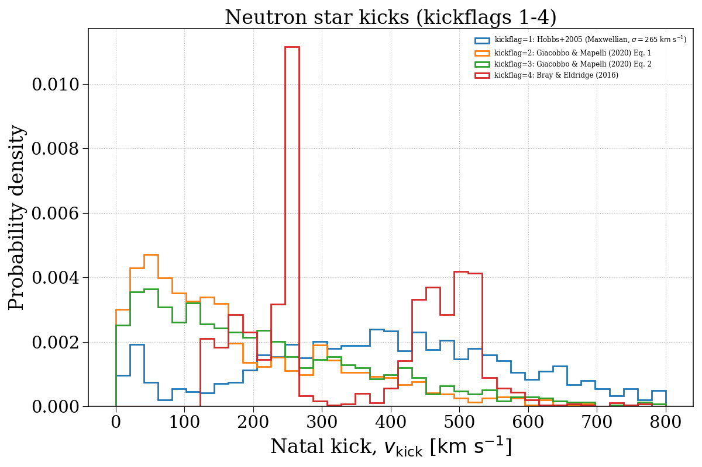
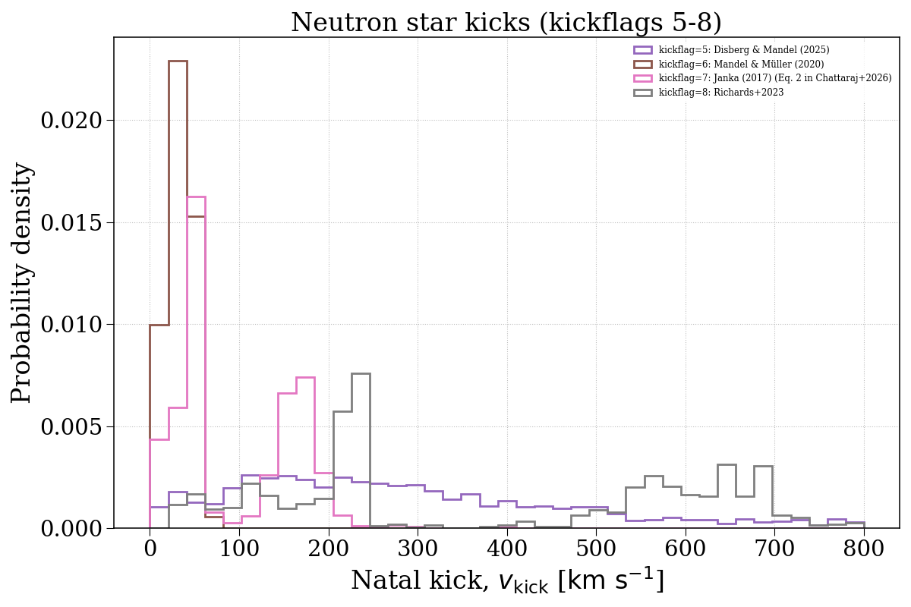
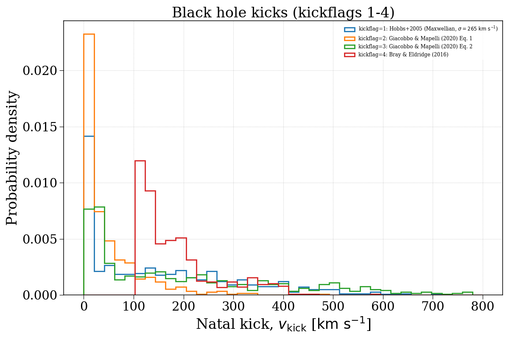
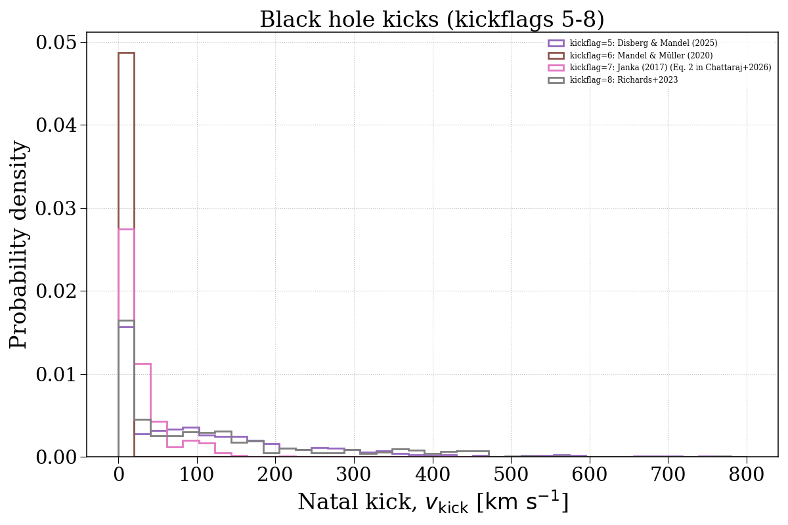

Note
Go to the end to download the full example code.
kickflag¶
This example demonstrates how changing the kickflag parameter can affect the natal kick velocity distributions of compact objects. We separate this into neutron stars and black holes.




Evolving population with kickflag = 1...
Evolving: 0%| | 0/2008 [00:00<?, ?sys/s]
Evolving: 0%| | 5/2008 [00:00<01:03, 31.66sys/s]
Evolving: 2%|▏ | 36/2008 [00:00<00:12, 163.42sys/s]
Evolving: 3%|▎ | 56/2008 [00:00<00:13, 141.07sys/s]
Evolving: 4%|▎ | 73/2008 [00:00<00:16, 117.81sys/s]
Evolving: 5%|▍ | 91/2008 [00:00<00:16, 116.94sys/s]
Evolving: 5%|▌ | 104/2008 [00:00<00:16, 116.14sys/s]
Evolving: 6%|▌ | 117/2008 [00:00<00:15, 119.47sys/s]
Evolving: 6%|▋ | 130/2008 [00:01<00:22, 84.79sys/s]
Evolving: 8%|▊ | 153/2008 [00:01<00:21, 88.08sys/s]
Evolving: 9%|▉ | 186/2008 [00:01<00:13, 131.84sys/s]
Evolving: 10%|█ | 203/2008 [00:01<00:15, 116.68sys/s]
Evolving: 11%|█ | 218/2008 [00:02<00:18, 96.43sys/s]
Evolving: 11%|█▏ | 230/2008 [00:02<00:18, 94.61sys/s]
Evolving: 13%|█▎ | 254/2008 [00:02<00:14, 119.25sys/s]
Evolving: 13%|█▎ | 268/2008 [00:02<00:14, 117.30sys/s]
Evolving: 14%|█▍ | 282/2008 [00:02<00:17, 98.97sys/s]
Evolving: 15%|█▍ | 300/2008 [00:02<00:14, 115.47sys/s]
Evolving: 16%|█▌ | 314/2008 [00:02<00:14, 119.56sys/s]
Evolving: 16%|█▋ | 328/2008 [00:02<00:13, 121.54sys/s]
Evolving: 17%|█▋ | 342/2008 [00:03<00:19, 87.02sys/s]
Evolving: 18%|█▊ | 366/2008 [00:03<00:16, 101.17sys/s]
Evolving: 19%|█▉ | 378/2008 [00:03<00:18, 89.11sys/s]
Evolving: 20%|██ | 407/2008 [00:03<00:13, 122.24sys/s]
Evolving: 21%|██ | 423/2008 [00:03<00:12, 127.98sys/s]
Evolving: 22%|██▏ | 438/2008 [00:03<00:12, 127.54sys/s]
Evolving: 23%|██▎ | 452/2008 [00:04<00:11, 129.81sys/s]
Evolving: 23%|██▎ | 466/2008 [00:04<00:11, 129.37sys/s]
Evolving: 24%|██▍ | 480/2008 [00:04<00:11, 128.52sys/s]
Evolving: 25%|██▍ | 494/2008 [00:04<00:15, 100.58sys/s]
Evolving: 25%|██▌ | 511/2008 [00:04<00:13, 108.78sys/s]
Evolving: 26%|██▌ | 523/2008 [00:04<00:19, 77.17sys/s]
Evolving: 28%|██▊ | 556/2008 [00:05<00:13, 108.30sys/s]
Evolving: 29%|██▊ | 576/2008 [00:05<00:11, 125.32sys/s]
Evolving: 29%|██▉ | 591/2008 [00:05<00:11, 122.56sys/s]
Evolving: 30%|███ | 605/2008 [00:05<00:11, 122.94sys/s]
Evolving: 31%|███ | 619/2008 [00:05<00:14, 94.03sys/s]
Evolving: 32%|███▏ | 641/2008 [00:05<00:11, 114.42sys/s]
Evolving: 33%|███▎ | 657/2008 [00:05<00:11, 121.68sys/s]
Evolving: 33%|███▎ | 671/2008 [00:06<00:11, 116.19sys/s]
Evolving: 34%|███▍ | 684/2008 [00:06<00:11, 115.87sys/s]
Evolving: 35%|███▍ | 699/2008 [00:06<00:12, 105.58sys/s]
Evolving: 36%|███▌ | 714/2008 [00:06<00:11, 114.43sys/s]
Evolving: 36%|███▌ | 727/2008 [00:06<00:11, 112.06sys/s]
Evolving: 37%|███▋ | 739/2008 [00:06<00:15, 83.42sys/s]
Evolving: 38%|███▊ | 762/2008 [00:06<00:11, 106.74sys/s]
Evolving: 39%|███▊ | 778/2008 [00:07<00:10, 115.05sys/s]
Evolving: 39%|███▉ | 791/2008 [00:07<00:10, 116.69sys/s]
Evolving: 40%|████ | 804/2008 [00:07<00:10, 117.44sys/s]
Evolving: 41%|████ | 817/2008 [00:07<00:10, 111.63sys/s]
Evolving: 41%|████▏ | 831/2008 [00:07<00:10, 116.80sys/s]
Evolving: 42%|████▏ | 844/2008 [00:07<00:11, 102.75sys/s]
Evolving: 43%|████▎ | 863/2008 [00:07<00:09, 122.41sys/s]
Evolving: 44%|████▎ | 878/2008 [00:07<00:09, 117.80sys/s]
Evolving: 44%|████▍ | 891/2008 [00:08<00:09, 113.03sys/s]
Evolving: 45%|████▌ | 909/2008 [00:08<00:08, 128.82sys/s]
Evolving: 46%|████▌ | 923/2008 [00:08<00:08, 130.83sys/s]
Evolving: 47%|████▋ | 937/2008 [00:08<00:08, 129.48sys/s]
Evolving: 47%|████▋ | 951/2008 [00:08<00:08, 129.55sys/s]
Evolving: 48%|████▊ | 965/2008 [00:08<00:07, 131.73sys/s]
Evolving: 49%|████▉ | 979/2008 [00:08<00:12, 83.07sys/s]
Evolving: 50%|█████ | 1012/2008 [00:08<00:07, 130.86sys/s]
Evolving: 51%|█████ | 1029/2008 [00:09<00:07, 128.52sys/s]
Evolving: 52%|█████▏ | 1045/2008 [00:09<00:08, 114.86sys/s]
Evolving: 53%|█████▎ | 1059/2008 [00:09<00:08, 112.62sys/s]
Evolving: 53%|█████▎ | 1072/2008 [00:09<00:10, 85.23sys/s]
Evolving: 55%|█████▍ | 1101/2008 [00:09<00:10, 89.63sys/s]
Evolving: 56%|█████▌ | 1117/2008 [00:10<00:09, 89.27sys/s]
Evolving: 57%|█████▋ | 1141/2008 [00:10<00:07, 114.19sys/s]
Evolving: 58%|█████▊ | 1155/2008 [00:10<00:08, 95.91sys/s]
Evolving: 59%|█████▉ | 1180/2008 [00:10<00:06, 123.07sys/s]
Evolving: 60%|█████▉ | 1196/2008 [00:10<00:06, 119.40sys/s]
Evolving: 60%|██████ | 1210/2008 [00:10<00:06, 119.58sys/s]
Evolving: 61%|██████ | 1224/2008 [00:11<00:06, 115.95sys/s]
Evolving: 62%|██████▏ | 1238/2008 [00:11<00:06, 116.31sys/s]
Evolving: 62%|██████▏ | 1251/2008 [00:11<00:06, 117.76sys/s]
Evolving: 63%|██████▎ | 1267/2008 [00:11<00:08, 86.72sys/s]
Evolving: 64%|██████▍ | 1283/2008 [00:11<00:09, 78.21sys/s]
Evolving: 66%|██████▌ | 1316/2008 [00:11<00:05, 120.43sys/s]
Evolving: 66%|██████▋ | 1332/2008 [00:12<00:06, 109.43sys/s]
Evolving: 67%|██████▋ | 1349/2008 [00:12<00:05, 118.07sys/s]
Evolving: 68%|██████▊ | 1363/2008 [00:12<00:05, 112.84sys/s]
Evolving: 69%|██████▊ | 1378/2008 [00:12<00:05, 118.09sys/s]
Evolving: 69%|██████▉ | 1393/2008 [00:12<00:05, 115.66sys/s]
Evolving: 70%|███████ | 1410/2008 [00:12<00:04, 127.28sys/s]
Evolving: 71%|███████ | 1424/2008 [00:12<00:04, 117.49sys/s]
Evolving: 72%|███████▏ | 1441/2008 [00:12<00:04, 125.96sys/s]
Evolving: 72%|███████▏ | 1455/2008 [00:13<00:04, 129.46sys/s]
Evolving: 73%|███████▎ | 1469/2008 [00:13<00:05, 103.69sys/s]
Evolving: 74%|███████▍ | 1493/2008 [00:13<00:04, 118.53sys/s]
Evolving: 75%|███████▌ | 1512/2008 [00:13<00:03, 133.81sys/s]
Evolving: 76%|███████▌ | 1527/2008 [00:13<00:03, 127.22sys/s]
Evolving: 77%|███████▋ | 1541/2008 [00:13<00:04, 105.14sys/s]
Evolving: 78%|███████▊ | 1560/2008 [00:13<00:03, 121.99sys/s]
Evolving: 78%|███████▊ | 1574/2008 [00:14<00:03, 123.44sys/s]
Evolving: 79%|███████▉ | 1588/2008 [00:14<00:04, 101.10sys/s]
Evolving: 80%|███████▉ | 1606/2008 [00:14<00:03, 104.74sys/s]
Evolving: 81%|████████ | 1618/2008 [00:14<00:04, 83.37sys/s]
Evolving: 82%|████████▏ | 1647/2008 [00:14<00:02, 122.77sys/s]
Evolving: 83%|████████▎ | 1663/2008 [00:14<00:02, 120.35sys/s]
Evolving: 84%|████████▎ | 1678/2008 [00:15<00:02, 118.97sys/s]
Evolving: 84%|████████▍ | 1692/2008 [00:15<00:03, 88.47sys/s]
Evolving: 85%|████████▍ | 1705/2008 [00:15<00:03, 89.68sys/s]
Evolving: 86%|████████▋ | 1735/2008 [00:15<00:02, 131.48sys/s]
Evolving: 87%|████████▋ | 1752/2008 [00:15<00:02, 127.04sys/s]
Evolving: 88%|████████▊ | 1767/2008 [00:15<00:01, 129.05sys/s]
Evolving: 89%|████████▊ | 1782/2008 [00:15<00:01, 121.61sys/s]
Evolving: 89%|████████▉ | 1796/2008 [00:16<00:02, 96.41sys/s]
Evolving: 91%|█████████ | 1818/2008 [00:16<00:01, 120.50sys/s]
Evolving: 91%|█████████▏| 1833/2008 [00:16<00:01, 123.89sys/s]
Evolving: 92%|█████████▏| 1847/2008 [00:16<00:01, 100.11sys/s]
Evolving: 93%|█████████▎| 1864/2008 [00:16<00:01, 108.09sys/s]
Evolving: 94%|█████████▎| 1878/2008 [00:16<00:01, 113.46sys/s]
Evolving: 94%|█████████▍| 1891/2008 [00:16<00:01, 105.08sys/s]
Evolving: 95%|█████████▌| 1908/2008 [00:17<00:00, 120.15sys/s]
Evolving: 96%|█████████▌| 1922/2008 [00:17<00:00, 124.83sys/s]
Evolving: 96%|█████████▋| 1936/2008 [00:17<00:00, 124.92sys/s]
Evolving: 97%|█████████▋| 1950/2008 [00:17<00:00, 89.19sys/s]
Evolving: 98%|█████████▊| 1961/2008 [00:17<00:00, 86.48sys/s]
Evolving: 99%|█████████▉| 1987/2008 [00:17<00:00, 121.54sys/s]
Evolving: 100%|█████████▉| 2002/2008 [00:18<00:00, 95.85sys/s]
Evolving: 100%|██████████| 2008/2008 [00:18<00:00, 111.17sys/s]
[Time taken: 18.3608 seconds]
Evolving population with kickflag = 2...
Evolving: 0%| | 0/2008 [00:00<?, ?sys/s]
Evolving: 0%| | 5/2008 [00:00<01:49, 18.35sys/s]
Evolving: 2%|▏ | 36/2008 [00:00<00:16, 116.18sys/s]
Evolving: 3%|▎ | 54/2008 [00:00<00:17, 114.06sys/s]
Evolving: 3%|▎ | 69/2008 [00:00<00:15, 122.53sys/s]
Evolving: 4%|▍ | 84/2008 [00:00<00:16, 113.92sys/s]
Evolving: 5%|▍ | 97/2008 [00:00<00:16, 114.19sys/s]
Evolving: 5%|▌ | 110/2008 [00:01<00:17, 109.84sys/s]
Evolving: 6%|▌ | 124/2008 [00:01<00:17, 109.36sys/s]
Evolving: 7%|▋ | 136/2008 [00:01<00:22, 84.41sys/s]
Evolving: 8%|▊ | 153/2008 [00:01<00:22, 80.73sys/s]
Evolving: 9%|▉ | 187/2008 [00:01<00:14, 127.66sys/s]
Evolving: 10%|█ | 203/2008 [00:01<00:15, 112.84sys/s]
Evolving: 11%|█ | 217/2008 [00:02<00:19, 90.49sys/s]
Evolving: 11%|█▏ | 230/2008 [00:02<00:18, 93.60sys/s]
Evolving: 13%|█▎ | 253/2008 [00:02<00:14, 119.99sys/s]
Evolving: 13%|█▎ | 268/2008 [00:02<00:14, 117.86sys/s]
Evolving: 14%|█▍ | 282/2008 [00:02<00:17, 99.83sys/s]
Evolving: 15%|█▍ | 300/2008 [00:02<00:15, 112.45sys/s]
Evolving: 16%|█▌ | 316/2008 [00:02<00:14, 120.19sys/s]
Evolving: 17%|█▋ | 333/2008 [00:03<00:13, 127.15sys/s]
Evolving: 17%|█▋ | 347/2008 [00:03<00:18, 88.22sys/s]
Evolving: 18%|█▊ | 366/2008 [00:03<00:16, 101.66sys/s]
Evolving: 19%|█▉ | 378/2008 [00:03<00:18, 88.30sys/s]
Evolving: 20%|██ | 408/2008 [00:03<00:12, 128.83sys/s]
Evolving: 21%|██ | 424/2008 [00:03<00:12, 129.08sys/s]
Evolving: 22%|██▏ | 439/2008 [00:04<00:12, 128.30sys/s]
Evolving: 23%|██▎ | 454/2008 [00:04<00:12, 128.48sys/s]
Evolving: 23%|██▎ | 468/2008 [00:04<00:11, 130.65sys/s]
Evolving: 24%|██▍ | 482/2008 [00:04<00:11, 131.76sys/s]
Evolving: 25%|██▍ | 496/2008 [00:04<00:15, 99.41sys/s]
Evolving: 25%|██▌ | 511/2008 [00:04<00:14, 106.64sys/s]
Evolving: 26%|██▌ | 523/2008 [00:05<00:19, 76.15sys/s]
Evolving: 28%|██▊ | 556/2008 [00:05<00:13, 107.02sys/s]
Evolving: 29%|██▊ | 577/2008 [00:05<00:12, 113.15sys/s]
Evolving: 30%|██▉ | 594/2008 [00:05<00:12, 113.49sys/s]
Evolving: 31%|███ | 615/2008 [00:05<00:10, 130.74sys/s]
Evolving: 31%|███▏ | 630/2008 [00:05<00:12, 112.68sys/s]
Evolving: 32%|███▏ | 643/2008 [00:05<00:12, 112.18sys/s]
Evolving: 33%|███▎ | 656/2008 [00:06<00:11, 114.84sys/s]
Evolving: 33%|███▎ | 669/2008 [00:06<00:12, 111.17sys/s]
Evolving: 34%|███▍ | 681/2008 [00:06<00:12, 107.87sys/s]
Evolving: 35%|███▍ | 699/2008 [00:06<00:11, 115.58sys/s]
Evolving: 35%|███▌ | 711/2008 [00:06<00:11, 113.92sys/s]
Evolving: 36%|███▌ | 723/2008 [00:06<00:12, 101.55sys/s]
Evolving: 37%|███▋ | 734/2008 [00:06<00:16, 78.58sys/s]
Evolving: 37%|███▋ | 743/2008 [00:07<00:15, 79.68sys/s]
Evolving: 39%|███▊ | 774/2008 [00:07<00:09, 130.62sys/s]
Evolving: 39%|███▉ | 789/2008 [00:07<00:09, 126.21sys/s]
Evolving: 40%|███▉ | 803/2008 [00:07<00:09, 121.33sys/s]
Evolving: 41%|████ | 817/2008 [00:07<00:09, 120.85sys/s]
Evolving: 41%|████▏ | 830/2008 [00:07<00:09, 118.38sys/s]
Evolving: 42%|████▏ | 843/2008 [00:07<00:09, 118.41sys/s]
Evolving: 43%|████▎ | 856/2008 [00:07<00:10, 114.52sys/s]
Evolving: 43%|████▎ | 872/2008 [00:07<00:09, 124.65sys/s]
Evolving: 44%|████▍ | 885/2008 [00:08<00:09, 123.11sys/s]
Evolving: 45%|████▍ | 898/2008 [00:08<00:09, 113.91sys/s]
Evolving: 46%|████▌ | 915/2008 [00:08<00:09, 118.63sys/s]
Evolving: 46%|████▌ | 927/2008 [00:08<00:09, 115.19sys/s]
Evolving: 47%|████▋ | 943/2008 [00:08<00:08, 126.38sys/s]
Evolving: 48%|████▊ | 959/2008 [00:08<00:07, 134.02sys/s]
Evolving: 48%|████▊ | 973/2008 [00:08<00:07, 131.33sys/s]
Evolving: 49%|████▉ | 987/2008 [00:09<00:10, 94.30sys/s]
Evolving: 50%|█████ | 1009/2008 [00:09<00:08, 120.68sys/s]
Evolving: 51%|█████ | 1024/2008 [00:09<00:08, 118.14sys/s]
Evolving: 52%|█████▏ | 1038/2008 [00:09<00:08, 120.65sys/s]
Evolving: 52%|█████▏ | 1052/2008 [00:09<00:09, 99.59sys/s]
Evolving: 53%|█████▎ | 1072/2008 [00:09<00:10, 90.91sys/s]
Evolving: 55%|█████▍ | 1101/2008 [00:10<00:09, 90.81sys/s]
Evolving: 56%|█████▌ | 1117/2008 [00:10<00:09, 91.35sys/s]
Evolving: 57%|█████▋ | 1140/2008 [00:10<00:07, 112.93sys/s]
Evolving: 57%|█████▋ | 1154/2008 [00:10<00:09, 90.80sys/s]
Evolving: 59%|█████▉ | 1182/2008 [00:10<00:07, 112.62sys/s]
Evolving: 60%|█████▉ | 1197/2008 [00:10<00:07, 110.96sys/s]
Evolving: 61%|██████ | 1217/2008 [00:11<00:06, 122.70sys/s]
Evolving: 61%|██████▏ | 1231/2008 [00:11<00:06, 122.88sys/s]
Evolving: 62%|██████▏ | 1245/2008 [00:11<00:06, 118.95sys/s]
Evolving: 63%|██████▎ | 1258/2008 [00:11<00:06, 120.51sys/s]
Evolving: 63%|██████▎ | 1271/2008 [00:11<00:07, 94.61sys/s]
Evolving: 64%|██████▍ | 1283/2008 [00:11<00:09, 76.64sys/s]
Evolving: 65%|██████▌ | 1315/2008 [00:12<00:05, 122.04sys/s]
Evolving: 66%|██████▋ | 1331/2008 [00:12<00:06, 104.45sys/s]
Evolving: 67%|██████▋ | 1349/2008 [00:12<00:05, 115.39sys/s]
Evolving: 68%|██████▊ | 1363/2008 [00:12<00:05, 118.95sys/s]
Evolving: 69%|██████▊ | 1377/2008 [00:12<00:05, 119.66sys/s]
Evolving: 69%|██████▉ | 1391/2008 [00:12<00:05, 118.52sys/s]
Evolving: 70%|███████ | 1407/2008 [00:12<00:04, 122.08sys/s]
Evolving: 71%|███████ | 1422/2008 [00:12<00:05, 110.99sys/s]
Evolving: 72%|███████▏ | 1442/2008 [00:13<00:04, 131.11sys/s]
Evolving: 73%|███████▎ | 1457/2008 [00:13<00:04, 128.12sys/s]
Evolving: 73%|███████▎ | 1471/2008 [00:13<00:05, 105.48sys/s]
Evolving: 74%|███████▍ | 1493/2008 [00:13<00:04, 121.39sys/s]
Evolving: 75%|███████▌ | 1510/2008 [00:13<00:03, 131.68sys/s]
Evolving: 76%|███████▌ | 1525/2008 [00:13<00:03, 128.04sys/s]
Evolving: 77%|███████▋ | 1539/2008 [00:13<00:04, 97.43sys/s]
Evolving: 78%|███████▊ | 1562/2008 [00:14<00:03, 116.55sys/s]
Evolving: 79%|███████▊ | 1578/2008 [00:14<00:03, 122.11sys/s]
Evolving: 79%|███████▉ | 1592/2008 [00:14<00:03, 113.27sys/s]
Evolving: 80%|███████▉ | 1605/2008 [00:14<00:03, 116.02sys/s]
Evolving: 81%|████████ | 1618/2008 [00:14<00:04, 79.80sys/s]
Evolving: 82%|████████▏ | 1648/2008 [00:14<00:02, 121.08sys/s]
Evolving: 83%|████████▎ | 1664/2008 [00:15<00:02, 117.44sys/s]
Evolving: 84%|████████▎ | 1679/2008 [00:15<00:02, 120.22sys/s]
Evolving: 84%|████████▍ | 1693/2008 [00:15<00:03, 89.76sys/s]
Evolving: 85%|████████▍ | 1705/2008 [00:15<00:03, 86.25sys/s]
Evolving: 86%|████████▋ | 1734/2008 [00:15<00:02, 125.57sys/s]
Evolving: 87%|████████▋ | 1750/2008 [00:15<00:02, 126.78sys/s]
Evolving: 88%|████████▊ | 1765/2008 [00:15<00:01, 129.02sys/s]
Evolving: 89%|████████▊ | 1780/2008 [00:16<00:01, 118.91sys/s]
Evolving: 89%|████████▉ | 1794/2008 [00:16<00:02, 94.06sys/s]
Evolving: 90%|█████████ | 1816/2008 [00:16<00:01, 118.01sys/s]
Evolving: 91%|█████████ | 1830/2008 [00:16<00:01, 117.44sys/s]
Evolving: 92%|█████████▏| 1844/2008 [00:16<00:01, 95.24sys/s]
Evolving: 93%|█████████▎| 1865/2008 [00:16<00:01, 117.53sys/s]
Evolving: 94%|█████████▎| 1879/2008 [00:17<00:01, 114.47sys/s]
Evolving: 94%|█████████▍| 1892/2008 [00:17<00:01, 103.99sys/s]
Evolving: 95%|█████████▌| 1909/2008 [00:17<00:00, 115.39sys/s]
Evolving: 96%|█████████▌| 1925/2008 [00:17<00:00, 116.61sys/s]
Evolving: 97%|█████████▋| 1941/2008 [00:17<00:00, 83.06sys/s]
Evolving: 98%|█████████▊| 1961/2008 [00:17<00:00, 103.98sys/s]
Evolving: 99%|█████████▊| 1980/2008 [00:17<00:00, 121.50sys/s]
Evolving: 99%|█████████▉| 1996/2008 [00:18<00:00, 127.44sys/s]
Evolving: 100%|██████████| 2008/2008 [00:18<00:00, 110.24sys/s]
[Time taken: 18.3945 seconds]
Evolving population with kickflag = 3...
Evolving: 0%| | 0/2008 [00:00<?, ?sys/s]
Evolving: 0%| | 5/2008 [00:00<01:47, 18.72sys/s]
Evolving: 2%|▏ | 33/2008 [00:00<00:18, 109.04sys/s]
Evolving: 2%|▏ | 50/2008 [00:00<00:18, 106.69sys/s]
Evolving: 3%|▎ | 67/2008 [00:00<00:15, 122.97sys/s]
Evolving: 4%|▍ | 82/2008 [00:00<00:15, 126.39sys/s]
Evolving: 5%|▍ | 97/2008 [00:00<00:15, 124.55sys/s]
Evolving: 6%|▌ | 111/2008 [00:01<00:18, 103.26sys/s]
Evolving: 6%|▋ | 128/2008 [00:01<00:23, 79.37sys/s]
Evolving: 8%|▊ | 153/2008 [00:01<00:20, 90.76sys/s]
Evolving: 9%|▉ | 185/2008 [00:01<00:13, 130.40sys/s]
Evolving: 10%|█ | 202/2008 [00:01<00:16, 112.72sys/s]
Evolving: 11%|█ | 216/2008 [00:02<00:19, 92.27sys/s]
Evolving: 11%|█▏ | 230/2008 [00:02<00:18, 95.33sys/s]
Evolving: 13%|█▎ | 254/2008 [00:02<00:14, 122.10sys/s]
Evolving: 13%|█▎ | 269/2008 [00:02<00:14, 121.21sys/s]
Evolving: 14%|█▍ | 283/2008 [00:02<00:17, 100.82sys/s]
Evolving: 15%|█▍ | 300/2008 [00:02<00:15, 112.75sys/s]
Evolving: 16%|█▌ | 315/2008 [00:02<00:14, 116.38sys/s]
Evolving: 16%|█▋ | 330/2008 [00:03<00:13, 124.11sys/s]
Evolving: 17%|█▋ | 344/2008 [00:03<00:17, 94.62sys/s]
Evolving: 18%|█▊ | 358/2008 [00:03<00:16, 101.38sys/s]
Evolving: 19%|█▊ | 373/2008 [00:03<00:20, 79.00sys/s]
Evolving: 20%|██ | 405/2008 [00:03<00:13, 123.09sys/s]
Evolving: 21%|██ | 422/2008 [00:03<00:12, 128.41sys/s]
Evolving: 22%|██▏ | 438/2008 [00:04<00:12, 128.84sys/s]
Evolving: 23%|██▎ | 453/2008 [00:04<00:12, 126.53sys/s]
Evolving: 23%|██▎ | 468/2008 [00:04<00:12, 126.94sys/s]
Evolving: 24%|██▍ | 484/2008 [00:04<00:12, 125.64sys/s]
Evolving: 25%|██▍ | 498/2008 [00:04<00:13, 108.63sys/s]
Evolving: 25%|██▌ | 511/2008 [00:04<00:13, 107.16sys/s]
Evolving: 26%|██▌ | 523/2008 [00:05<00:19, 74.75sys/s]
Evolving: 28%|██▊ | 556/2008 [00:05<00:13, 106.56sys/s]
Evolving: 29%|██▊ | 577/2008 [00:05<00:12, 116.07sys/s]
Evolving: 30%|██▉ | 594/2008 [00:05<00:12, 112.87sys/s]
Evolving: 31%|███ | 617/2008 [00:05<00:13, 102.61sys/s]
Evolving: 32%|███▏ | 641/2008 [00:05<00:11, 122.38sys/s]
Evolving: 33%|███▎ | 656/2008 [00:05<00:10, 125.68sys/s]
Evolving: 33%|███▎ | 670/2008 [00:06<00:11, 119.05sys/s]
Evolving: 34%|███▍ | 683/2008 [00:06<00:11, 116.96sys/s]
Evolving: 35%|███▍ | 699/2008 [00:06<00:11, 110.77sys/s]
Evolving: 36%|███▌ | 714/2008 [00:06<00:10, 119.36sys/s]
Evolving: 36%|███▌ | 727/2008 [00:06<00:11, 116.03sys/s]
Evolving: 37%|███▋ | 739/2008 [00:06<00:14, 86.17sys/s]
Evolving: 37%|███▋ | 749/2008 [00:06<00:14, 87.61sys/s]
Evolving: 39%|███▊ | 774/2008 [00:07<00:10, 120.57sys/s]
Evolving: 39%|███▉ | 788/2008 [00:07<00:09, 122.52sys/s]
Evolving: 40%|███▉ | 802/2008 [00:07<00:10, 112.35sys/s]
Evolving: 41%|████ | 815/2008 [00:07<00:10, 114.93sys/s]
Evolving: 41%|████▏ | 830/2008 [00:07<00:09, 123.76sys/s]
Evolving: 42%|████▏ | 843/2008 [00:07<00:09, 120.61sys/s]
Evolving: 43%|████▎ | 856/2008 [00:07<00:09, 119.11sys/s]
Evolving: 43%|████▎ | 869/2008 [00:07<00:09, 119.89sys/s]
Evolving: 44%|████▍ | 884/2008 [00:08<00:08, 127.22sys/s]
Evolving: 45%|████▍ | 897/2008 [00:08<00:09, 118.76sys/s]
Evolving: 45%|████▌ | 910/2008 [00:08<00:09, 117.20sys/s]
Evolving: 46%|████▌ | 925/2008 [00:08<00:08, 124.44sys/s]
Evolving: 47%|████▋ | 938/2008 [00:08<00:08, 125.33sys/s]
Evolving: 47%|████▋ | 953/2008 [00:08<00:08, 120.99sys/s]
Evolving: 48%|████▊ | 969/2008 [00:08<00:08, 125.47sys/s]
Evolving: 49%|████▉ | 982/2008 [00:08<00:11, 88.05sys/s]
Evolving: 50%|█████ | 1009/2008 [00:09<00:07, 125.20sys/s]
Evolving: 51%|█████ | 1024/2008 [00:09<00:08, 120.79sys/s]
Evolving: 52%|█████▏ | 1040/2008 [00:09<00:07, 129.57sys/s]
Evolving: 53%|█████▎ | 1055/2008 [00:09<00:09, 105.82sys/s]
Evolving: 53%|█████▎ | 1072/2008 [00:09<00:10, 89.93sys/s]
Evolving: 55%|█████▍ | 1101/2008 [00:10<00:09, 91.59sys/s]
Evolving: 56%|█████▌ | 1117/2008 [00:10<00:09, 89.64sys/s]
Evolving: 57%|█████▋ | 1142/2008 [00:10<00:07, 116.60sys/s]
Evolving: 58%|█████▊ | 1157/2008 [00:10<00:08, 99.78sys/s]
Evolving: 59%|█████▉ | 1180/2008 [00:10<00:06, 121.29sys/s]
Evolving: 60%|█████▉ | 1195/2008 [00:10<00:07, 114.80sys/s]
Evolving: 60%|██████ | 1210/2008 [00:10<00:06, 119.28sys/s]
Evolving: 61%|██████ | 1224/2008 [00:11<00:06, 117.96sys/s]
Evolving: 62%|██████▏ | 1238/2008 [00:11<00:06, 114.87sys/s]
Evolving: 62%|██████▏ | 1252/2008 [00:11<00:06, 117.84sys/s]
Evolving: 63%|██████▎ | 1267/2008 [00:11<00:08, 89.09sys/s]
Evolving: 64%|██████▍ | 1283/2008 [00:11<00:09, 79.16sys/s]
Evolving: 65%|██████▌ | 1314/2008 [00:11<00:05, 119.86sys/s]
Evolving: 66%|██████▌ | 1330/2008 [00:12<00:06, 103.58sys/s]
Evolving: 67%|██████▋ | 1349/2008 [00:12<00:05, 115.79sys/s]
Evolving: 68%|██████▊ | 1363/2008 [00:12<00:05, 119.50sys/s]
Evolving: 69%|██████▊ | 1377/2008 [00:12<00:05, 115.51sys/s]
Evolving: 69%|██████▉ | 1390/2008 [00:12<00:05, 117.36sys/s]
Evolving: 70%|██████▉ | 1405/2008 [00:12<00:04, 122.75sys/s]
Evolving: 71%|███████ | 1418/2008 [00:12<00:04, 123.74sys/s]
Evolving: 71%|███████▏ | 1431/2008 [00:12<00:04, 120.37sys/s]
Evolving: 72%|███████▏ | 1444/2008 [00:13<00:04, 122.16sys/s]
Evolving: 73%|███████▎ | 1458/2008 [00:13<00:04, 126.95sys/s]
Evolving: 73%|███████▎ | 1471/2008 [00:13<00:05, 100.95sys/s]
Evolving: 74%|███████▍ | 1493/2008 [00:13<00:04, 121.27sys/s]
Evolving: 75%|███████▌ | 1511/2008 [00:13<00:03, 127.77sys/s]
Evolving: 76%|███████▌ | 1525/2008 [00:13<00:04, 119.19sys/s]
Evolving: 77%|███████▋ | 1538/2008 [00:13<00:04, 101.35sys/s]
Evolving: 78%|███████▊ | 1562/2008 [00:14<00:03, 115.71sys/s]
Evolving: 79%|███████▊ | 1579/2008 [00:14<00:03, 112.72sys/s]
Evolving: 79%|███████▉ | 1595/2008 [00:14<00:03, 122.67sys/s]
Evolving: 80%|████████ | 1608/2008 [00:14<00:03, 107.11sys/s]
Evolving: 81%|████████ | 1620/2008 [00:14<00:04, 84.08sys/s]
Evolving: 82%|████████▏ | 1650/2008 [00:14<00:03, 104.78sys/s]
Evolving: 83%|████████▎ | 1674/2008 [00:15<00:02, 128.59sys/s]
Evolving: 84%|████████▍ | 1689/2008 [00:15<00:02, 126.53sys/s]
Evolving: 85%|████████▍ | 1703/2008 [00:15<00:02, 110.68sys/s]
Evolving: 85%|████████▌ | 1715/2008 [00:15<00:02, 99.93sys/s]
Evolving: 86%|████████▋ | 1736/2008 [00:15<00:02, 121.06sys/s]
Evolving: 87%|████████▋ | 1750/2008 [00:15<00:02, 121.22sys/s]
Evolving: 88%|████████▊ | 1764/2008 [00:15<00:01, 125.19sys/s]
Evolving: 89%|████████▊ | 1778/2008 [00:16<00:02, 112.24sys/s]
Evolving: 89%|████████▉ | 1790/2008 [00:16<00:02, 82.35sys/s]
Evolving: 90%|█████████ | 1817/2008 [00:16<00:01, 119.02sys/s]
Evolving: 91%|█████████ | 1832/2008 [00:16<00:01, 125.25sys/s]
Evolving: 92%|█████████▏| 1847/2008 [00:16<00:01, 100.21sys/s]
Evolving: 93%|█████████▎| 1866/2008 [00:16<00:01, 118.70sys/s]
Evolving: 94%|█████████▎| 1881/2008 [00:16<00:01, 111.55sys/s]
Evolving: 94%|█████████▍| 1894/2008 [00:17<00:01, 106.90sys/s]
Evolving: 95%|█████████▌| 1909/2008 [00:17<00:00, 115.88sys/s]
Evolving: 96%|█████████▌| 1923/2008 [00:17<00:00, 119.04sys/s]
Evolving: 96%|█████████▋| 1936/2008 [00:17<00:00, 121.20sys/s]
Evolving: 97%|█████████▋| 1949/2008 [00:17<00:00, 89.06sys/s]
Evolving: 98%|█████████▊| 1961/2008 [00:17<00:00, 88.35sys/s]
Evolving: 99%|█████████▉| 1987/2008 [00:17<00:00, 121.77sys/s]
Evolving: 100%|█████████▉| 2001/2008 [00:18<00:00, 96.04sys/s]
Evolving: 100%|██████████| 2008/2008 [00:18<00:00, 110.57sys/s]
[Time taken: 18.3420 seconds]
Evolving population with kickflag = 4...
Evolving: 0%| | 0/2008 [00:00<?, ?sys/s]
Evolving: 0%| | 5/2008 [00:00<01:43, 19.42sys/s]
Evolving: 2%|▏ | 35/2008 [00:00<00:17, 113.44sys/s]
Evolving: 3%|▎ | 52/2008 [00:00<00:17, 114.92sys/s]
Evolving: 3%|▎ | 67/2008 [00:00<00:16, 120.09sys/s]
Evolving: 4%|▍ | 81/2008 [00:00<00:15, 121.83sys/s]
Evolving: 5%|▍ | 95/2008 [00:00<00:16, 118.96sys/s]
Evolving: 5%|▌ | 108/2008 [00:01<00:17, 107.99sys/s]
Evolving: 6%|▌ | 122/2008 [00:01<00:16, 113.87sys/s]
Evolving: 7%|▋ | 134/2008 [00:01<00:21, 85.41sys/s]
Evolving: 8%|▊ | 153/2008 [00:01<00:21, 84.58sys/s]
Evolving: 9%|▉ | 185/2008 [00:01<00:14, 129.78sys/s]
Evolving: 10%|█ | 201/2008 [00:01<00:15, 116.34sys/s]
Evolving: 11%|█ | 215/2008 [00:02<00:19, 91.02sys/s]
Evolving: 11%|█▏ | 230/2008 [00:02<00:19, 92.43sys/s]
Evolving: 13%|█▎ | 256/2008 [00:02<00:14, 123.59sys/s]
Evolving: 14%|█▎ | 272/2008 [00:02<00:19, 90.61sys/s]
Evolving: 15%|█▍ | 296/2008 [00:02<00:14, 116.60sys/s]
Evolving: 16%|█▌ | 312/2008 [00:02<00:13, 123.50sys/s]
Evolving: 16%|█▋ | 328/2008 [00:03<00:13, 126.04sys/s]
Evolving: 17%|█▋ | 343/2008 [00:03<00:17, 96.74sys/s]
Evolving: 18%|█▊ | 358/2008 [00:03<00:15, 105.55sys/s]
Evolving: 19%|█▊ | 373/2008 [00:03<00:20, 80.71sys/s]
Evolving: 20%|██ | 409/2008 [00:03<00:12, 130.24sys/s]
Evolving: 21%|██▏ | 428/2008 [00:03<00:12, 128.42sys/s]
Evolving: 22%|██▏ | 445/2008 [00:04<00:12, 126.18sys/s]
Evolving: 23%|██▎ | 461/2008 [00:04<00:11, 130.15sys/s]
Evolving: 24%|██▎ | 476/2008 [00:04<00:11, 132.56sys/s]
Evolving: 24%|██▍ | 491/2008 [00:04<00:15, 96.07sys/s]
Evolving: 25%|██▌ | 511/2008 [00:04<00:13, 113.89sys/s]
Evolving: 26%|██▌ | 525/2008 [00:04<00:17, 83.49sys/s]
Evolving: 28%|██▊ | 556/2008 [00:05<00:13, 111.28sys/s]
Evolving: 29%|██▊ | 575/2008 [00:05<00:11, 124.29sys/s]
Evolving: 29%|██▉ | 590/2008 [00:05<00:11, 124.75sys/s]
Evolving: 30%|███ | 605/2008 [00:05<00:11, 123.63sys/s]
Evolving: 31%|███ | 619/2008 [00:05<00:14, 94.23sys/s]
Evolving: 32%|███▏ | 641/2008 [00:05<00:11, 118.71sys/s]
Evolving: 33%|███▎ | 657/2008 [00:05<00:11, 119.10sys/s]
Evolving: 33%|███▎ | 671/2008 [00:06<00:11, 118.56sys/s]
Evolving: 34%|███▍ | 685/2008 [00:06<00:11, 112.11sys/s]
Evolving: 35%|███▍ | 699/2008 [00:06<00:12, 106.85sys/s]
Evolving: 36%|███▌ | 715/2008 [00:06<00:10, 118.11sys/s]
Evolving: 36%|███▋ | 728/2008 [00:06<00:11, 114.26sys/s]
Evolving: 37%|███▋ | 740/2008 [00:06<00:14, 86.73sys/s]
Evolving: 38%|███▊ | 760/2008 [00:06<00:11, 107.51sys/s]
Evolving: 39%|███▊ | 774/2008 [00:07<00:10, 114.15sys/s]
Evolving: 39%|███▉ | 787/2008 [00:07<00:10, 117.11sys/s]
Evolving: 40%|███▉ | 800/2008 [00:07<00:11, 105.69sys/s]
Evolving: 40%|████ | 812/2008 [00:07<00:11, 106.86sys/s]
Evolving: 41%|████▏ | 830/2008 [00:07<00:09, 124.41sys/s]
Evolving: 42%|████▏ | 844/2008 [00:07<00:10, 108.87sys/s]
Evolving: 43%|████▎ | 862/2008 [00:07<00:09, 123.32sys/s]
Evolving: 44%|████▎ | 876/2008 [00:07<00:09, 124.32sys/s]
Evolving: 44%|████▍ | 889/2008 [00:08<00:10, 109.55sys/s]
Evolving: 45%|████▌ | 909/2008 [00:08<00:08, 129.87sys/s]
Evolving: 46%|████▌ | 924/2008 [00:08<00:08, 125.01sys/s]
Evolving: 47%|████▋ | 938/2008 [00:08<00:08, 126.70sys/s]
Evolving: 47%|████▋ | 953/2008 [00:08<00:08, 125.63sys/s]
Evolving: 48%|████▊ | 970/2008 [00:08<00:07, 136.98sys/s]
Evolving: 49%|████▉ | 985/2008 [00:08<00:10, 100.62sys/s]
Evolving: 50%|█████ | 1006/2008 [00:09<00:08, 123.06sys/s]
Evolving: 51%|█████ | 1021/2008 [00:09<00:08, 121.57sys/s]
Evolving: 52%|█████▏ | 1035/2008 [00:09<00:08, 117.11sys/s]
Evolving: 52%|█████▏ | 1048/2008 [00:09<00:10, 91.71sys/s]
Evolving: 53%|█████▎ | 1072/2008 [00:09<00:09, 94.14sys/s]
Evolving: 55%|█████▍ | 1101/2008 [00:10<00:09, 93.20sys/s]
Evolving: 56%|█████▌ | 1117/2008 [00:10<00:09, 93.44sys/s]
Evolving: 57%|█████▋ | 1141/2008 [00:10<00:07, 118.29sys/s]
Evolving: 58%|█████▊ | 1156/2008 [00:10<00:08, 100.73sys/s]
Evolving: 59%|█████▊ | 1178/2008 [00:10<00:06, 121.95sys/s]
Evolving: 59%|█████▉ | 1193/2008 [00:10<00:06, 116.80sys/s]
Evolving: 60%|██████ | 1207/2008 [00:10<00:06, 121.08sys/s]
Evolving: 61%|██████ | 1221/2008 [00:11<00:07, 109.40sys/s]
Evolving: 62%|██████▏ | 1236/2008 [00:11<00:06, 117.86sys/s]
Evolving: 62%|██████▏ | 1250/2008 [00:11<00:06, 121.85sys/s]
Evolving: 63%|██████▎ | 1266/2008 [00:11<00:05, 129.21sys/s]
Evolving: 64%|██████▎ | 1280/2008 [00:11<00:06, 111.05sys/s]
Evolving: 64%|██████▍ | 1292/2008 [00:11<00:08, 80.81sys/s]
Evolving: 66%|██████▌ | 1317/2008 [00:11<00:06, 112.48sys/s]
Evolving: 66%|██████▋ | 1331/2008 [00:12<00:06, 100.70sys/s]
Evolving: 67%|██████▋ | 1348/2008 [00:12<00:05, 114.79sys/s]
Evolving: 68%|██████▊ | 1362/2008 [00:12<00:05, 110.27sys/s]
Evolving: 69%|██████▊ | 1377/2008 [00:12<00:05, 117.46sys/s]
Evolving: 69%|██████▉ | 1390/2008 [00:12<00:05, 116.76sys/s]
Evolving: 70%|██████▉ | 1405/2008 [00:12<00:05, 120.42sys/s]
Evolving: 71%|███████ | 1421/2008 [00:12<00:04, 127.01sys/s]
Evolving: 71%|███████▏ | 1435/2008 [00:12<00:04, 119.78sys/s]
Evolving: 72%|███████▏ | 1448/2008 [00:13<00:04, 120.91sys/s]
Evolving: 73%|███████▎ | 1461/2008 [00:13<00:04, 121.89sys/s]
Evolving: 73%|███████▎ | 1474/2008 [00:13<00:04, 109.72sys/s]
Evolving: 74%|███████▍ | 1493/2008 [00:13<00:04, 122.76sys/s]
Evolving: 75%|███████▌ | 1509/2008 [00:13<00:03, 128.56sys/s]
Evolving: 76%|███████▌ | 1523/2008 [00:13<00:03, 123.86sys/s]
Evolving: 76%|███████▋ | 1536/2008 [00:13<00:05, 92.44sys/s]
Evolving: 78%|███████▊ | 1562/2008 [00:14<00:03, 114.54sys/s]
Evolving: 79%|███████▊ | 1579/2008 [00:14<00:03, 113.55sys/s]
Evolving: 79%|███████▉ | 1591/2008 [00:14<00:03, 112.89sys/s]
Evolving: 80%|███████▉ | 1606/2008 [00:14<00:03, 107.19sys/s]
Evolving: 81%|████████ | 1618/2008 [00:14<00:04, 83.52sys/s]
Evolving: 82%|████████▏ | 1646/2008 [00:14<00:02, 121.90sys/s]
Evolving: 83%|████████▎ | 1661/2008 [00:14<00:02, 116.56sys/s]
Evolving: 83%|████████▎ | 1675/2008 [00:15<00:02, 117.96sys/s]
Evolving: 84%|████████▍ | 1689/2008 [00:15<00:02, 122.77sys/s]
Evolving: 85%|████████▍ | 1703/2008 [00:15<00:02, 105.36sys/s]
Evolving: 85%|████████▌ | 1715/2008 [00:15<00:03, 96.86sys/s]
Evolving: 86%|████████▋ | 1735/2008 [00:15<00:02, 119.04sys/s]
Evolving: 87%|████████▋ | 1749/2008 [00:15<00:02, 121.34sys/s]
Evolving: 88%|████████▊ | 1763/2008 [00:15<00:01, 123.55sys/s]
Evolving: 88%|████████▊ | 1777/2008 [00:15<00:02, 109.63sys/s]
Evolving: 89%|████████▉ | 1789/2008 [00:16<00:02, 83.09sys/s]
Evolving: 91%|█████████ | 1818/2008 [00:16<00:01, 121.44sys/s]
Evolving: 91%|█████████▏| 1833/2008 [00:16<00:01, 125.81sys/s]
Evolving: 92%|█████████▏| 1848/2008 [00:16<00:01, 104.96sys/s]
Evolving: 93%|█████████▎| 1864/2008 [00:16<00:01, 108.28sys/s]
Evolving: 94%|█████████▎| 1879/2008 [00:16<00:01, 115.26sys/s]
Evolving: 94%|█████████▍| 1892/2008 [00:17<00:01, 103.12sys/s]
Evolving: 95%|█████████▌| 1911/2008 [00:17<00:00, 120.33sys/s]
Evolving: 96%|█████████▌| 1925/2008 [00:17<00:00, 123.27sys/s]
Evolving: 97%|█████████▋| 1940/2008 [00:17<00:00, 122.60sys/s]
Evolving: 97%|█████████▋| 1953/2008 [00:17<00:00, 104.17sys/s]
Evolving: 98%|█████████▊| 1965/2008 [00:17<00:00, 91.74sys/s]
Evolving: 99%|█████████▉| 1987/2008 [00:17<00:00, 119.50sys/s]
Evolving: 100%|█████████▉| 2001/2008 [00:18<00:00, 92.98sys/s]
Evolving: 100%|██████████| 2008/2008 [00:18<00:00, 110.99sys/s]
[Time taken: 18.2676 seconds]
Evolving population with kickflag = 5...
Evolving: 0%| | 0/2008 [00:00<?, ?sys/s]
Evolving: 0%| | 5/2008 [00:00<01:47, 18.59sys/s]
Evolving: 2%|▏ | 35/2008 [00:00<00:17, 112.76sys/s]
Evolving: 3%|▎ | 52/2008 [00:00<00:17, 112.23sys/s]
Evolving: 3%|▎ | 68/2008 [00:00<00:16, 121.20sys/s]
Evolving: 4%|▍ | 83/2008 [00:00<00:15, 123.22sys/s]
Evolving: 5%|▍ | 97/2008 [00:00<00:16, 114.92sys/s]
Evolving: 5%|▌ | 110/2008 [00:01<00:17, 109.57sys/s]
Evolving: 6%|▌ | 125/2008 [00:01<00:16, 116.42sys/s]
Evolving: 7%|▋ | 138/2008 [00:01<00:20, 92.42sys/s]
Evolving: 8%|▊ | 153/2008 [00:01<00:23, 79.45sys/s]
Evolving: 9%|▉ | 187/2008 [00:01<00:14, 127.20sys/s]
Evolving: 10%|█ | 203/2008 [00:01<00:16, 110.66sys/s]
Evolving: 11%|█ | 217/2008 [00:02<00:19, 91.61sys/s]
Evolving: 11%|█▏ | 230/2008 [00:02<00:19, 92.48sys/s]
Evolving: 13%|█▎ | 253/2008 [00:02<00:14, 118.77sys/s]
Evolving: 13%|█▎ | 268/2008 [00:02<00:14, 117.14sys/s]
Evolving: 14%|█▍ | 282/2008 [00:02<00:17, 98.77sys/s]
Evolving: 15%|█▌ | 302/2008 [00:02<00:14, 115.81sys/s]
Evolving: 16%|█▌ | 317/2008 [00:02<00:14, 120.76sys/s]
Evolving: 16%|█▋ | 331/2008 [00:03<00:13, 121.88sys/s]
Evolving: 17%|█▋ | 345/2008 [00:03<00:19, 84.21sys/s]
Evolving: 18%|█▊ | 366/2008 [00:03<00:15, 104.29sys/s]
Evolving: 19%|█▉ | 379/2008 [00:03<00:17, 91.01sys/s]
Evolving: 20%|██ | 407/2008 [00:03<00:12, 127.39sys/s]
Evolving: 21%|██ | 423/2008 [00:03<00:12, 124.87sys/s]
Evolving: 22%|██▏ | 438/2008 [00:04<00:12, 124.81sys/s]
Evolving: 23%|██▎ | 453/2008 [00:04<00:17, 88.10sys/s]
Evolving: 24%|██▎ | 472/2008 [00:04<00:14, 106.61sys/s]
Evolving: 24%|██▍ | 486/2008 [00:04<00:13, 112.44sys/s]
Evolving: 25%|██▍ | 500/2008 [00:04<00:15, 98.37sys/s]
Evolving: 25%|██▌ | 512/2008 [00:04<00:15, 98.82sys/s]
Evolving: 26%|██▌ | 524/2008 [00:05<00:20, 73.29sys/s]
Evolving: 28%|██▊ | 555/2008 [00:05<00:12, 114.25sys/s]
Evolving: 28%|██▊ | 570/2008 [00:05<00:12, 114.98sys/s]
Evolving: 29%|██▉ | 584/2008 [00:05<00:12, 114.13sys/s]
Evolving: 30%|██▉ | 597/2008 [00:05<00:13, 108.04sys/s]
Evolving: 31%|███ | 615/2008 [00:05<00:11, 124.23sys/s]
Evolving: 31%|███▏ | 629/2008 [00:05<00:13, 104.20sys/s]
Evolving: 32%|███▏ | 644/2008 [00:06<00:12, 112.68sys/s]
Evolving: 33%|███▎ | 657/2008 [00:06<00:12, 112.25sys/s]
Evolving: 33%|███▎ | 670/2008 [00:06<00:11, 112.17sys/s]
Evolving: 34%|███▍ | 682/2008 [00:06<00:12, 104.83sys/s]
Evolving: 35%|███▍ | 699/2008 [00:06<00:11, 110.88sys/s]
Evolving: 35%|███▌ | 711/2008 [00:06<00:11, 108.77sys/s]
Evolving: 36%|███▌ | 723/2008 [00:06<00:12, 102.73sys/s]
Evolving: 37%|███▋ | 734/2008 [00:07<00:16, 78.17sys/s]
Evolving: 37%|███▋ | 743/2008 [00:07<00:15, 79.57sys/s]
Evolving: 39%|███▊ | 774/2008 [00:07<00:09, 125.42sys/s]
Evolving: 39%|███▉ | 788/2008 [00:07<00:09, 127.47sys/s]
Evolving: 40%|███▉ | 802/2008 [00:07<00:10, 118.37sys/s]
Evolving: 41%|████ | 815/2008 [00:07<00:10, 117.24sys/s]
Evolving: 41%|████▏ | 831/2008 [00:07<00:09, 123.36sys/s]
Evolving: 42%|████▏ | 844/2008 [00:07<00:10, 109.20sys/s]
Evolving: 43%|████▎ | 860/2008 [00:08<00:09, 120.82sys/s]
Evolving: 44%|████▎ | 875/2008 [00:08<00:09, 121.87sys/s]
Evolving: 44%|████▍ | 889/2008 [00:08<00:10, 111.75sys/s]
Evolving: 45%|████▌ | 909/2008 [00:08<00:08, 126.82sys/s]
Evolving: 46%|████▌ | 925/2008 [00:08<00:08, 131.53sys/s]
Evolving: 47%|████▋ | 939/2008 [00:08<00:08, 124.63sys/s]
Evolving: 47%|████▋ | 953/2008 [00:08<00:08, 124.83sys/s]
Evolving: 48%|████▊ | 970/2008 [00:08<00:07, 134.08sys/s]
Evolving: 49%|████▉ | 984/2008 [00:09<00:11, 89.24sys/s]
Evolving: 50%|█████ | 1011/2008 [00:09<00:08, 123.41sys/s]
Evolving: 51%|█████ | 1027/2008 [00:09<00:08, 120.63sys/s]
Evolving: 52%|█████▏ | 1042/2008 [00:09<00:08, 111.64sys/s]
Evolving: 53%|█████▎ | 1055/2008 [00:09<00:08, 107.68sys/s]
Evolving: 53%|█████▎ | 1072/2008 [00:09<00:10, 87.73sys/s]
Evolving: 55%|█████▍ | 1101/2008 [00:10<00:09, 91.12sys/s]
Evolving: 56%|█████▌ | 1117/2008 [00:10<00:09, 91.73sys/s]
Evolving: 57%|█████▋ | 1141/2008 [00:10<00:07, 115.82sys/s]
Evolving: 58%|█████▊ | 1155/2008 [00:10<00:08, 95.32sys/s]
Evolving: 59%|█████▉ | 1182/2008 [00:10<00:07, 115.14sys/s]
Evolving: 60%|█████▉ | 1197/2008 [00:11<00:07, 111.27sys/s]
Evolving: 61%|██████ | 1216/2008 [00:11<00:06, 126.87sys/s]
Evolving: 61%|██████▏ | 1231/2008 [00:11<00:06, 118.93sys/s]
Evolving: 62%|██████▏ | 1244/2008 [00:11<00:06, 119.04sys/s]
Evolving: 63%|██████▎ | 1260/2008 [00:11<00:05, 126.58sys/s]
Evolving: 63%|██████▎ | 1274/2008 [00:11<00:07, 99.42sys/s]
Evolving: 64%|██████▍ | 1286/2008 [00:12<00:09, 78.32sys/s]
Evolving: 66%|██████▌ | 1316/2008 [00:12<00:06, 115.00sys/s]
Evolving: 66%|██████▌ | 1330/2008 [00:12<00:06, 103.78sys/s]
Evolving: 67%|██████▋ | 1348/2008 [00:12<00:05, 117.35sys/s]
Evolving: 68%|██████▊ | 1362/2008 [00:12<00:05, 115.52sys/s]
Evolving: 68%|██████▊ | 1375/2008 [00:12<00:05, 116.99sys/s]
Evolving: 69%|██████▉ | 1390/2008 [00:12<00:05, 119.14sys/s]
Evolving: 70%|██████▉ | 1404/2008 [00:12<00:04, 124.31sys/s]
Evolving: 71%|███████ | 1417/2008 [00:13<00:04, 123.98sys/s]
Evolving: 71%|███████▏ | 1431/2008 [00:13<00:04, 120.53sys/s]
Evolving: 72%|███████▏ | 1448/2008 [00:13<00:04, 128.91sys/s]
Evolving: 73%|███████▎ | 1462/2008 [00:13<00:04, 124.11sys/s]
Evolving: 73%|███████▎ | 1475/2008 [00:13<00:04, 113.49sys/s]
Evolving: 74%|███████▍ | 1491/2008 [00:13<00:04, 125.05sys/s]
Evolving: 75%|███████▍ | 1505/2008 [00:13<00:03, 127.20sys/s]
Evolving: 76%|███████▌ | 1518/2008 [00:13<00:04, 119.81sys/s]
Evolving: 76%|███████▌ | 1531/2008 [00:14<00:05, 85.67sys/s]
Evolving: 78%|███████▊ | 1562/2008 [00:14<00:03, 117.95sys/s]
Evolving: 79%|███████▊ | 1579/2008 [00:14<00:03, 117.15sys/s]
Evolving: 79%|███████▉ | 1594/2008 [00:14<00:03, 119.86sys/s]
Evolving: 80%|████████ | 1607/2008 [00:14<00:03, 112.38sys/s]
Evolving: 81%|████████ | 1619/2008 [00:14<00:04, 85.61sys/s]
Evolving: 82%|████████▏ | 1645/2008 [00:15<00:03, 118.16sys/s]
Evolving: 83%|████████▎ | 1659/2008 [00:15<00:02, 117.59sys/s]
Evolving: 83%|████████▎ | 1673/2008 [00:15<00:02, 117.57sys/s]
Evolving: 84%|████████▍ | 1689/2008 [00:15<00:02, 123.29sys/s]
Evolving: 85%|████████▍ | 1703/2008 [00:15<00:02, 107.31sys/s]
Evolving: 85%|████████▌ | 1715/2008 [00:15<00:03, 96.72sys/s]
Evolving: 86%|████████▋ | 1736/2008 [00:15<00:02, 118.78sys/s]
Evolving: 87%|████████▋ | 1750/2008 [00:15<00:02, 116.33sys/s]
Evolving: 88%|████████▊ | 1766/2008 [00:16<00:01, 125.69sys/s]
Evolving: 89%|████████▊ | 1780/2008 [00:16<00:02, 109.90sys/s]
Evolving: 89%|████████▉ | 1792/2008 [00:16<00:02, 88.63sys/s]
Evolving: 90%|█████████ | 1817/2008 [00:16<00:01, 121.34sys/s]
Evolving: 91%|█████████ | 1832/2008 [00:16<00:01, 123.69sys/s]
Evolving: 92%|█████████▏| 1846/2008 [00:16<00:01, 101.16sys/s]
Evolving: 93%|█████████▎| 1865/2008 [00:16<00:01, 117.58sys/s]
Evolving: 94%|█████████▎| 1879/2008 [00:17<00:01, 114.61sys/s]
Evolving: 94%|█████████▍| 1892/2008 [00:17<00:01, 103.13sys/s]
Evolving: 95%|█████████▌| 1910/2008 [00:17<00:00, 118.72sys/s]
Evolving: 96%|█████████▌| 1924/2008 [00:17<00:00, 116.27sys/s]
Evolving: 97%|█████████▋| 1941/2008 [00:17<00:00, 83.73sys/s]
Evolving: 98%|█████████▊| 1961/2008 [00:17<00:00, 94.33sys/s]
Evolving: 99%|█████████▉| 1987/2008 [00:18<00:00, 120.84sys/s]
Evolving: 100%|█████████▉| 2001/2008 [00:18<00:00, 100.10sys/s]
Evolving: 100%|██████████| 2008/2008 [00:18<00:00, 109.54sys/s]
[Time taken: 18.5087 seconds]
Evolving population with kickflag = 6...
Evolving: 0%| | 0/2008 [00:00<?, ?sys/s]
Evolving: 0%| | 5/2008 [00:00<01:48, 18.53sys/s]
Evolving: 2%|▏ | 36/2008 [00:00<00:16, 119.28sys/s]
Evolving: 3%|▎ | 55/2008 [00:00<00:16, 116.12sys/s]
Evolving: 4%|▎ | 71/2008 [00:00<00:16, 118.02sys/s]
Evolving: 4%|▍ | 86/2008 [00:00<00:16, 120.02sys/s]
Evolving: 5%|▍ | 100/2008 [00:00<00:16, 118.24sys/s]
Evolving: 6%|▌ | 113/2008 [00:01<00:17, 105.76sys/s]
Evolving: 6%|▋ | 128/2008 [00:01<00:24, 77.40sys/s]
Evolving: 8%|▊ | 153/2008 [00:01<00:21, 87.21sys/s]
Evolving: 9%|▉ | 184/2008 [00:01<00:14, 126.46sys/s]
Evolving: 10%|█ | 201/2008 [00:01<00:15, 117.27sys/s]
Evolving: 11%|█ | 216/2008 [00:02<00:19, 90.70sys/s]
Evolving: 11%|█▏ | 230/2008 [00:02<00:19, 93.53sys/s]
Evolving: 13%|█▎ | 255/2008 [00:02<00:14, 118.59sys/s]
Evolving: 13%|█▎ | 270/2008 [00:02<00:14, 120.25sys/s]
Evolving: 14%|█▍ | 284/2008 [00:02<00:16, 102.16sys/s]
Evolving: 15%|█▍ | 300/2008 [00:02<00:15, 111.07sys/s]
Evolving: 16%|█▌ | 316/2008 [00:02<00:14, 117.57sys/s]
Evolving: 17%|█▋ | 332/2008 [00:03<00:13, 121.18sys/s]
Evolving: 17%|█▋ | 345/2008 [00:03<00:19, 85.97sys/s]
Evolving: 18%|█▊ | 366/2008 [00:03<00:16, 102.56sys/s]
Evolving: 19%|█▉ | 378/2008 [00:03<00:18, 88.86sys/s]
Evolving: 20%|██ | 404/2008 [00:03<00:13, 121.64sys/s]
Evolving: 21%|██ | 420/2008 [00:03<00:12, 126.94sys/s]
Evolving: 22%|██▏ | 435/2008 [00:04<00:12, 127.12sys/s]
Evolving: 22%|██▏ | 450/2008 [00:04<00:12, 129.67sys/s]
Evolving: 23%|██▎ | 464/2008 [00:04<00:12, 126.60sys/s]
Evolving: 24%|██▍ | 479/2008 [00:04<00:11, 130.93sys/s]
Evolving: 25%|██▍ | 493/2008 [00:04<00:16, 93.93sys/s]
Evolving: 25%|██▌ | 511/2008 [00:04<00:13, 111.31sys/s]
Evolving: 26%|██▌ | 525/2008 [00:05<00:18, 80.75sys/s]
Evolving: 28%|██▊ | 556/2008 [00:05<00:13, 109.43sys/s]
Evolving: 29%|██▊ | 575/2008 [00:05<00:11, 123.47sys/s]
Evolving: 29%|██▉ | 590/2008 [00:05<00:11, 121.69sys/s]
Evolving: 30%|███ | 604/2008 [00:05<00:11, 118.98sys/s]
Evolving: 31%|███ | 617/2008 [00:05<00:15, 92.37sys/s]
Evolving: 32%|███▏ | 641/2008 [00:05<00:11, 115.97sys/s]
Evolving: 33%|███▎ | 657/2008 [00:06<00:11, 122.65sys/s]
Evolving: 33%|███▎ | 671/2008 [00:06<00:11, 118.29sys/s]
Evolving: 34%|███▍ | 684/2008 [00:06<00:11, 111.80sys/s]
Evolving: 35%|███▍ | 699/2008 [00:06<00:12, 103.90sys/s]
Evolving: 36%|███▌ | 717/2008 [00:06<00:10, 119.00sys/s]
Evolving: 36%|███▋ | 730/2008 [00:06<00:10, 116.32sys/s]
Evolving: 37%|███▋ | 743/2008 [00:07<00:16, 75.47sys/s]
Evolving: 39%|███▊ | 774/2008 [00:07<00:10, 115.01sys/s]
Evolving: 39%|███▉ | 789/2008 [00:07<00:10, 114.31sys/s]
Evolving: 40%|███▉ | 803/2008 [00:07<00:10, 116.74sys/s]
Evolving: 41%|████ | 817/2008 [00:07<00:10, 117.34sys/s]
Evolving: 41%|████▏ | 830/2008 [00:07<00:09, 118.02sys/s]
Evolving: 42%|████▏ | 843/2008 [00:07<00:10, 115.37sys/s]
Evolving: 43%|████▎ | 856/2008 [00:07<00:09, 118.72sys/s]
Evolving: 43%|████▎ | 869/2008 [00:07<00:09, 121.69sys/s]
Evolving: 44%|████▍ | 883/2008 [00:08<00:09, 122.06sys/s]
Evolving: 45%|████▍ | 896/2008 [00:08<00:09, 121.21sys/s]
Evolving: 45%|████▌ | 909/2008 [00:08<00:08, 122.19sys/s]
Evolving: 46%|████▌ | 924/2008 [00:08<00:08, 125.65sys/s]
Evolving: 47%|████▋ | 937/2008 [00:08<00:08, 126.04sys/s]
Evolving: 47%|████▋ | 952/2008 [00:08<00:08, 127.47sys/s]
Evolving: 48%|████▊ | 966/2008 [00:08<00:08, 128.06sys/s]
Evolving: 49%|████▉ | 979/2008 [00:09<00:12, 81.02sys/s]
Evolving: 50%|█████ | 1013/2008 [00:09<00:07, 128.33sys/s]
Evolving: 51%|█████ | 1029/2008 [00:09<00:07, 126.26sys/s]
Evolving: 52%|█████▏ | 1044/2008 [00:09<00:08, 113.14sys/s]
Evolving: 53%|█████▎ | 1057/2008 [00:09<00:08, 111.55sys/s]
Evolving: 53%|█████▎ | 1072/2008 [00:09<00:10, 86.88sys/s]
Evolving: 55%|█████▍ | 1101/2008 [00:10<00:10, 90.43sys/s]
Evolving: 56%|█████▌ | 1117/2008 [00:10<00:10, 87.31sys/s]
Evolving: 57%|█████▋ | 1142/2008 [00:10<00:07, 114.37sys/s]
Evolving: 58%|█████▊ | 1157/2008 [00:10<00:08, 102.73sys/s]
Evolving: 58%|█████▊ | 1172/2008 [00:10<00:07, 109.18sys/s]
Evolving: 59%|█████▉ | 1189/2008 [00:10<00:06, 118.08sys/s]
Evolving: 60%|█████▉ | 1203/2008 [00:10<00:06, 117.97sys/s]
Evolving: 61%|██████ | 1216/2008 [00:11<00:06, 119.57sys/s]
Evolving: 61%|██████ | 1229/2008 [00:11<00:06, 116.78sys/s]
Evolving: 62%|██████▏ | 1242/2008 [00:11<00:06, 120.03sys/s]
Evolving: 63%|██████▎ | 1256/2008 [00:11<00:06, 116.48sys/s]
Evolving: 63%|██████▎ | 1268/2008 [00:11<00:08, 88.31sys/s]
Evolving: 64%|██████▍ | 1283/2008 [00:11<00:09, 74.14sys/s]
Evolving: 65%|██████▌ | 1315/2008 [00:12<00:05, 116.75sys/s]
Evolving: 66%|██████▌ | 1330/2008 [00:12<00:06, 100.47sys/s]
Evolving: 67%|██████▋ | 1353/2008 [00:12<00:05, 124.89sys/s]
Evolving: 68%|██████▊ | 1369/2008 [00:12<00:05, 110.22sys/s]
Evolving: 69%|██████▉ | 1384/2008 [00:12<00:05, 117.02sys/s]
Evolving: 70%|██████▉ | 1400/2008 [00:12<00:04, 126.38sys/s]
Evolving: 70%|███████ | 1415/2008 [00:12<00:04, 123.56sys/s]
Evolving: 71%|███████ | 1429/2008 [00:12<00:04, 124.09sys/s]
Evolving: 72%|███████▏ | 1443/2008 [00:13<00:04, 125.13sys/s]
Evolving: 73%|███████▎ | 1457/2008 [00:13<00:05, 98.68sys/s]
Evolving: 73%|███████▎ | 1469/2008 [00:13<00:05, 100.73sys/s]
Evolving: 74%|███████▍ | 1487/2008 [00:13<00:04, 117.48sys/s]
Evolving: 75%|███████▍ | 1500/2008 [00:13<00:04, 117.03sys/s]
Evolving: 75%|███████▌ | 1514/2008 [00:13<00:04, 106.53sys/s]
Evolving: 76%|███████▌ | 1530/2008 [00:14<00:05, 86.16sys/s]
Evolving: 78%|███████▊ | 1562/2008 [00:14<00:03, 122.08sys/s]
Evolving: 79%|███████▊ | 1579/2008 [00:14<00:03, 117.08sys/s]
Evolving: 79%|███████▉ | 1592/2008 [00:14<00:03, 113.51sys/s]
Evolving: 80%|███████▉ | 1606/2008 [00:14<00:03, 111.27sys/s]
Evolving: 81%|████████ | 1618/2008 [00:14<00:04, 83.78sys/s]
Evolving: 82%|████████▏ | 1647/2008 [00:14<00:02, 122.58sys/s]
Evolving: 83%|████████▎ | 1662/2008 [00:15<00:02, 122.09sys/s]
Evolving: 84%|████████▎ | 1677/2008 [00:15<00:02, 120.03sys/s]
Evolving: 84%|████████▍ | 1691/2008 [00:15<00:03, 88.84sys/s]
Evolving: 85%|████████▍ | 1705/2008 [00:15<00:03, 88.30sys/s]
Evolving: 86%|████████▋ | 1736/2008 [00:15<00:02, 130.99sys/s]
Evolving: 87%|████████▋ | 1753/2008 [00:15<00:01, 127.97sys/s]
Evolving: 88%|████████▊ | 1768/2008 [00:16<00:01, 130.03sys/s]
Evolving: 89%|████████▉ | 1783/2008 [00:16<00:01, 127.41sys/s]
Evolving: 89%|████████▉ | 1797/2008 [00:16<00:02, 94.33sys/s]
Evolving: 91%|█████████ | 1818/2008 [00:16<00:01, 117.03sys/s]
Evolving: 91%|█████████▏| 1833/2008 [00:16<00:01, 122.28sys/s]
Evolving: 92%|█████████▏| 1848/2008 [00:16<00:01, 101.26sys/s]
Evolving: 93%|█████████▎| 1864/2008 [00:16<00:01, 112.77sys/s]
Evolving: 93%|█████████▎| 1877/2008 [00:17<00:01, 109.72sys/s]
Evolving: 94%|█████████▍| 1890/2008 [00:17<00:01, 113.98sys/s]
Evolving: 95%|█████████▍| 1903/2008 [00:17<00:00, 110.92sys/s]
Evolving: 95%|█████████▌| 1915/2008 [00:17<00:00, 112.87sys/s]
Evolving: 96%|█████████▌| 1929/2008 [00:17<00:00, 116.98sys/s]
Evolving: 97%|█████████▋| 1942/2008 [00:17<00:00, 75.36sys/s]
Evolving: 98%|█████████▊| 1961/2008 [00:17<00:00, 91.54sys/s]
Evolving: 99%|█████████▉| 1987/2008 [00:18<00:00, 123.08sys/s]
Evolving: 100%|█████████▉| 2002/2008 [00:18<00:00, 97.81sys/s]
Evolving: 100%|██████████| 2008/2008 [00:18<00:00, 109.54sys/s]
[Time taken: 18.5118 seconds]
Evolving population with kickflag = 7...
Evolving: 0%| | 0/2008 [00:00<?, ?sys/s]
Evolving: 0%| | 5/2008 [00:00<01:47, 18.68sys/s]
Evolving: 2%|▏ | 35/2008 [00:00<00:17, 112.16sys/s]
Evolving: 3%|▎ | 52/2008 [00:00<00:18, 105.22sys/s]
Evolving: 3%|▎ | 70/2008 [00:00<00:15, 122.80sys/s]
Evolving: 4%|▍ | 85/2008 [00:00<00:15, 124.18sys/s]
Evolving: 5%|▍ | 100/2008 [00:00<00:15, 121.16sys/s]
Evolving: 6%|▌ | 114/2008 [00:01<00:17, 110.82sys/s]
Evolving: 6%|▋ | 128/2008 [00:01<00:23, 79.52sys/s]
Evolving: 8%|▊ | 153/2008 [00:01<00:21, 87.51sys/s]
Evolving: 9%|▉ | 186/2008 [00:01<00:14, 127.84sys/s]
Evolving: 10%|█ | 202/2008 [00:01<00:15, 113.16sys/s]
Evolving: 11%|█ | 216/2008 [00:02<00:19, 92.03sys/s]
Evolving: 11%|█▏ | 230/2008 [00:02<00:18, 95.62sys/s]
Evolving: 13%|█▎ | 254/2008 [00:02<00:14, 123.18sys/s]
Evolving: 13%|█▎ | 269/2008 [00:02<00:14, 119.06sys/s]
Evolving: 14%|█▍ | 283/2008 [00:02<00:17, 100.96sys/s]
Evolving: 15%|█▍ | 300/2008 [00:02<00:14, 114.44sys/s]
Evolving: 16%|█▌ | 314/2008 [00:02<00:14, 115.11sys/s]
Evolving: 16%|█▋ | 330/2008 [00:03<00:13, 123.71sys/s]
Evolving: 17%|█▋ | 344/2008 [00:03<00:17, 93.30sys/s]
Evolving: 18%|█▊ | 358/2008 [00:03<00:16, 98.78sys/s]
Evolving: 19%|█▊ | 373/2008 [00:03<00:20, 78.78sys/s]
Evolving: 20%|██ | 409/2008 [00:03<00:12, 128.87sys/s]
Evolving: 21%|██ | 426/2008 [00:03<00:12, 129.07sys/s]
Evolving: 22%|██▏ | 442/2008 [00:04<00:12, 128.20sys/s]
Evolving: 23%|██▎ | 457/2008 [00:04<00:11, 130.26sys/s]
Evolving: 24%|██▎ | 472/2008 [00:04<00:11, 129.76sys/s]
Evolving: 24%|██▍ | 487/2008 [00:04<00:12, 126.39sys/s]
Evolving: 25%|██▍ | 501/2008 [00:04<00:13, 108.94sys/s]
Evolving: 26%|██▌ | 513/2008 [00:04<00:13, 107.51sys/s]
Evolving: 26%|██▌ | 525/2008 [00:05<00:19, 75.69sys/s]
Evolving: 28%|██▊ | 556/2008 [00:05<00:13, 108.23sys/s]
Evolving: 29%|██▊ | 575/2008 [00:05<00:11, 121.00sys/s]
Evolving: 29%|██▉ | 589/2008 [00:05<00:11, 119.18sys/s]
Evolving: 30%|███ | 603/2008 [00:05<00:11, 117.85sys/s]
Evolving: 31%|███ | 617/2008 [00:05<00:15, 92.16sys/s]
Evolving: 32%|███▏ | 641/2008 [00:05<00:11, 118.29sys/s]
Evolving: 33%|███▎ | 657/2008 [00:05<00:10, 126.83sys/s]
Evolving: 33%|███▎ | 672/2008 [00:06<00:11, 118.88sys/s]
Evolving: 34%|███▍ | 685/2008 [00:06<00:11, 111.17sys/s]
Evolving: 35%|███▍ | 699/2008 [00:06<00:11, 111.14sys/s]
Evolving: 36%|███▌ | 714/2008 [00:06<00:11, 112.33sys/s]
Evolving: 36%|███▌ | 726/2008 [00:06<00:11, 110.02sys/s]
Evolving: 37%|███▋ | 738/2008 [00:06<00:15, 83.06sys/s]
Evolving: 37%|███▋ | 748/2008 [00:07<00:15, 83.50sys/s]
Evolving: 39%|███▊ | 774/2008 [00:07<00:10, 120.62sys/s]
Evolving: 39%|███▉ | 788/2008 [00:07<00:10, 118.70sys/s]
Evolving: 40%|███▉ | 801/2008 [00:07<00:10, 113.54sys/s]
Evolving: 41%|████ | 814/2008 [00:07<00:10, 113.58sys/s]
Evolving: 41%|████ | 828/2008 [00:07<00:09, 119.14sys/s]
Evolving: 42%|████▏ | 841/2008 [00:07<00:09, 120.00sys/s]
Evolving: 43%|████▎ | 854/2008 [00:07<00:09, 116.42sys/s]
Evolving: 43%|████▎ | 869/2008 [00:07<00:09, 122.97sys/s]
Evolving: 44%|████▍ | 882/2008 [00:08<00:09, 123.99sys/s]
Evolving: 45%|████▍ | 895/2008 [00:08<00:09, 121.55sys/s]
Evolving: 45%|████▌ | 909/2008 [00:08<00:08, 123.91sys/s]
Evolving: 46%|████▌ | 924/2008 [00:08<00:08, 123.87sys/s]
Evolving: 47%|████▋ | 937/2008 [00:08<00:08, 124.07sys/s]
Evolving: 47%|████▋ | 952/2008 [00:08<00:08, 126.04sys/s]
Evolving: 48%|████▊ | 966/2008 [00:08<00:08, 126.47sys/s]
Evolving: 49%|████▉ | 979/2008 [00:09<00:13, 77.94sys/s]
Evolving: 51%|█████ | 1015/2008 [00:09<00:07, 131.32sys/s]
Evolving: 51%|█████▏ | 1033/2008 [00:09<00:08, 117.93sys/s]
Evolving: 52%|█████▏ | 1048/2008 [00:09<00:09, 98.79sys/s]
Evolving: 53%|█████▎ | 1072/2008 [00:09<00:09, 97.68sys/s]
Evolving: 55%|█████▍ | 1101/2008 [00:10<00:09, 96.16sys/s]
Evolving: 56%|█████▌ | 1117/2008 [00:10<00:09, 93.20sys/s]
Evolving: 57%|█████▋ | 1142/2008 [00:10<00:07, 118.02sys/s]
Evolving: 58%|█████▊ | 1157/2008 [00:10<00:08, 102.52sys/s]
Evolving: 59%|█████▊ | 1179/2008 [00:10<00:06, 123.55sys/s]
Evolving: 60%|█████▉ | 1195/2008 [00:10<00:06, 120.28sys/s]
Evolving: 60%|██████ | 1209/2008 [00:10<00:06, 118.39sys/s]
Evolving: 61%|██████ | 1223/2008 [00:11<00:06, 113.33sys/s]
Evolving: 62%|██████▏ | 1236/2008 [00:11<00:06, 112.76sys/s]
Evolving: 62%|██████▏ | 1253/2008 [00:11<00:06, 123.74sys/s]
Evolving: 63%|██████▎ | 1267/2008 [00:11<00:08, 86.21sys/s]
Evolving: 64%|██████▍ | 1283/2008 [00:11<00:09, 78.10sys/s]
Evolving: 66%|██████▌ | 1317/2008 [00:11<00:05, 124.27sys/s]
Evolving: 66%|██████▋ | 1334/2008 [00:12<00:06, 110.00sys/s]
Evolving: 67%|██████▋ | 1351/2008 [00:12<00:05, 121.31sys/s]
Evolving: 68%|██████▊ | 1366/2008 [00:12<00:05, 119.80sys/s]
Evolving: 69%|██████▊ | 1380/2008 [00:12<00:05, 117.43sys/s]
Evolving: 69%|██████▉ | 1394/2008 [00:12<00:05, 118.00sys/s]
Evolving: 70%|███████ | 1407/2008 [00:12<00:05, 119.96sys/s]
Evolving: 71%|███████ | 1421/2008 [00:12<00:04, 124.99sys/s]
Evolving: 71%|███████▏ | 1435/2008 [00:12<00:04, 120.23sys/s]
Evolving: 72%|███████▏ | 1451/2008 [00:13<00:04, 123.17sys/s]
Evolving: 73%|███████▎ | 1464/2008 [00:13<00:05, 91.73sys/s]
Evolving: 74%|███████▍ | 1493/2008 [00:13<00:04, 126.14sys/s]
Evolving: 75%|███████▌ | 1511/2008 [00:13<00:03, 134.01sys/s]
Evolving: 76%|███████▌ | 1526/2008 [00:13<00:03, 126.52sys/s]
Evolving: 77%|███████▋ | 1540/2008 [00:13<00:04, 104.84sys/s]
Evolving: 78%|███████▊ | 1560/2008 [00:14<00:03, 125.00sys/s]
Evolving: 78%|███████▊ | 1574/2008 [00:14<00:03, 126.10sys/s]
Evolving: 79%|███████▉ | 1588/2008 [00:14<00:04, 100.49sys/s]
Evolving: 80%|███████▉ | 1606/2008 [00:14<00:03, 108.27sys/s]
Evolving: 81%|████████ | 1618/2008 [00:14<00:04, 82.89sys/s]
Evolving: 82%|████████▏ | 1649/2008 [00:14<00:02, 120.97sys/s]
Evolving: 83%|████████▎ | 1664/2008 [00:15<00:02, 121.41sys/s]
Evolving: 84%|████████▎ | 1678/2008 [00:15<00:02, 118.87sys/s]
Evolving: 84%|████████▍ | 1691/2008 [00:15<00:03, 89.68sys/s]
Evolving: 85%|████████▍ | 1705/2008 [00:15<00:03, 89.87sys/s]
Evolving: 86%|████████▋ | 1733/2008 [00:15<00:02, 126.88sys/s]
Evolving: 87%|████████▋ | 1749/2008 [00:15<00:01, 130.50sys/s]
Evolving: 88%|████████▊ | 1764/2008 [00:15<00:01, 130.49sys/s]
Evolving: 89%|████████▊ | 1779/2008 [00:16<00:01, 120.89sys/s]
Evolving: 89%|████████▉ | 1793/2008 [00:16<00:02, 94.10sys/s]
Evolving: 90%|█████████ | 1816/2008 [00:16<00:01, 118.80sys/s]
Evolving: 91%|█████████ | 1831/2008 [00:16<00:01, 119.53sys/s]
Evolving: 92%|█████████▏| 1845/2008 [00:16<00:01, 99.21sys/s]
Evolving: 93%|█████████▎| 1864/2008 [00:16<00:01, 117.51sys/s]
Evolving: 94%|█████████▎| 1878/2008 [00:16<00:01, 115.52sys/s]
Evolving: 94%|█████████▍| 1891/2008 [00:17<00:01, 102.42sys/s]
Evolving: 95%|█████████▌| 1910/2008 [00:17<00:00, 118.89sys/s]
Evolving: 96%|█████████▌| 1923/2008 [00:17<00:00, 120.67sys/s]
Evolving: 96%|█████████▋| 1936/2008 [00:17<00:00, 115.82sys/s]
Evolving: 97%|█████████▋| 1949/2008 [00:17<00:00, 84.61sys/s]
Evolving: 98%|█████████▊| 1961/2008 [00:17<00:00, 86.13sys/s]
Evolving: 99%|█████████▉| 1987/2008 [00:17<00:00, 120.23sys/s]
Evolving: 100%|█████████▉| 2001/2008 [00:18<00:00, 94.74sys/s]
Evolving: 100%|██████████| 2008/2008 [00:18<00:00, 110.39sys/s]
[Time taken: 18.3719 seconds]
Evolving population with kickflag = 8...
Evolving: 0%| | 0/2008 [00:00<?, ?sys/s]
Evolving: 0%| | 5/2008 [00:00<01:47, 18.65sys/s]
Evolving: 2%|▏ | 35/2008 [00:00<00:17, 111.12sys/s]
Evolving: 3%|▎ | 52/2008 [00:00<00:17, 114.21sys/s]
Evolving: 3%|▎ | 67/2008 [00:00<00:15, 123.71sys/s]
Evolving: 4%|▍ | 82/2008 [00:00<00:16, 119.00sys/s]
Evolving: 5%|▍ | 96/2008 [00:00<00:16, 116.57sys/s]
Evolving: 5%|▌ | 109/2008 [00:01<00:17, 106.24sys/s]
Evolving: 6%|▌ | 122/2008 [00:01<00:17, 110.22sys/s]
Evolving: 7%|▋ | 134/2008 [00:01<00:22, 84.97sys/s]
Evolving: 8%|▊ | 153/2008 [00:01<00:22, 81.92sys/s]
Evolving: 9%|▉ | 187/2008 [00:01<00:13, 131.14sys/s]
Evolving: 10%|█ | 204/2008 [00:01<00:15, 115.18sys/s]
Evolving: 11%|█ | 219/2008 [00:02<00:18, 95.48sys/s]
Evolving: 12%|█▏ | 231/2008 [00:02<00:19, 93.07sys/s]
Evolving: 13%|█▎ | 257/2008 [00:02<00:14, 120.58sys/s]
Evolving: 13%|█▎ | 271/2008 [00:02<00:14, 117.09sys/s]
Evolving: 14%|█▍ | 284/2008 [00:02<00:16, 101.80sys/s]
Evolving: 15%|█▌ | 302/2008 [00:02<00:15, 113.20sys/s]
Evolving: 16%|█▌ | 316/2008 [00:02<00:14, 118.42sys/s]
Evolving: 17%|█▋ | 333/2008 [00:03<00:13, 126.23sys/s]
Evolving: 17%|█▋ | 347/2008 [00:03<00:18, 89.37sys/s]
Evolving: 18%|█▊ | 366/2008 [00:03<00:16, 101.57sys/s]
Evolving: 19%|█▉ | 378/2008 [00:03<00:19, 85.42sys/s]
Evolving: 20%|██ | 409/2008 [00:03<00:12, 124.23sys/s]
Evolving: 21%|██ | 424/2008 [00:03<00:12, 123.56sys/s]
Evolving: 22%|██▏ | 441/2008 [00:04<00:11, 133.85sys/s]
Evolving: 23%|██▎ | 456/2008 [00:04<00:11, 130.16sys/s]
Evolving: 23%|██▎ | 471/2008 [00:04<00:11, 131.57sys/s]
Evolving: 24%|██▍ | 485/2008 [00:04<00:11, 132.58sys/s]
Evolving: 25%|██▍ | 499/2008 [00:04<00:13, 108.37sys/s]
Evolving: 25%|██▌ | 511/2008 [00:04<00:14, 100.70sys/s]
Evolving: 26%|██▌ | 522/2008 [00:04<00:15, 93.47sys/s]
Evolving: 26%|██▋ | 532/2008 [00:04<00:16, 87.79sys/s]
Evolving: 28%|██▊ | 554/2008 [00:05<00:12, 117.29sys/s]
Evolving: 28%|██▊ | 567/2008 [00:05<00:11, 120.18sys/s]
Evolving: 29%|██▉ | 580/2008 [00:05<00:13, 108.53sys/s]
Evolving: 30%|██▉ | 594/2008 [00:05<00:13, 105.68sys/s]
Evolving: 31%|███ | 616/2008 [00:05<00:10, 132.76sys/s]
Evolving: 31%|███▏ | 631/2008 [00:05<00:12, 108.00sys/s]
Evolving: 32%|███▏ | 647/2008 [00:05<00:11, 114.73sys/s]
Evolving: 33%|███▎ | 660/2008 [00:06<00:14, 92.27sys/s]
Evolving: 34%|███▍ | 680/2008 [00:06<00:12, 109.83sys/s]
Evolving: 35%|███▍ | 699/2008 [00:06<00:10, 120.98sys/s]
Evolving: 36%|███▌ | 713/2008 [00:06<00:10, 120.88sys/s]
Evolving: 36%|███▌ | 726/2008 [00:06<00:11, 114.36sys/s]
Evolving: 37%|███▋ | 738/2008 [00:06<00:14, 86.39sys/s]
Evolving: 37%|███▋ | 748/2008 [00:06<00:14, 86.77sys/s]
Evolving: 39%|███▊ | 774/2008 [00:07<00:10, 122.51sys/s]
Evolving: 39%|███▉ | 788/2008 [00:07<00:09, 126.18sys/s]
Evolving: 40%|███▉ | 802/2008 [00:07<00:10, 115.25sys/s]
Evolving: 41%|████ | 815/2008 [00:07<00:10, 113.99sys/s]
Evolving: 41%|████▏ | 831/2008 [00:07<00:09, 123.63sys/s]
Evolving: 42%|████▏ | 844/2008 [00:07<00:10, 108.44sys/s]
Evolving: 43%|████▎ | 861/2008 [00:07<00:09, 123.03sys/s]
Evolving: 44%|████▎ | 875/2008 [00:07<00:08, 126.40sys/s]
Evolving: 44%|████▍ | 889/2008 [00:08<00:10, 110.24sys/s]
Evolving: 45%|████▌ | 906/2008 [00:08<00:08, 123.75sys/s]
Evolving: 46%|████▌ | 923/2008 [00:08<00:08, 133.43sys/s]
Evolving: 47%|████▋ | 938/2008 [00:08<00:08, 128.96sys/s]
Evolving: 47%|████▋ | 953/2008 [00:08<00:08, 126.92sys/s]
Evolving: 48%|████▊ | 969/2008 [00:08<00:08, 125.61sys/s]
Evolving: 49%|████▉ | 982/2008 [00:08<00:11, 87.12sys/s]
Evolving: 50%|█████ | 1013/2008 [00:09<00:07, 128.34sys/s]
Evolving: 51%|█████ | 1029/2008 [00:09<00:07, 125.10sys/s]
Evolving: 52%|█████▏ | 1044/2008 [00:09<00:08, 116.74sys/s]
Evolving: 53%|█████▎ | 1057/2008 [00:09<00:08, 109.56sys/s]
Evolving: 53%|█████▎ | 1072/2008 [00:09<00:10, 89.24sys/s]
Evolving: 55%|█████▍ | 1101/2008 [00:10<00:10, 90.34sys/s]
Evolving: 56%|█████▌ | 1117/2008 [00:10<00:09, 89.34sys/s]
Evolving: 57%|█████▋ | 1141/2008 [00:10<00:07, 111.92sys/s]
Evolving: 57%|█████▋ | 1154/2008 [00:10<00:08, 95.28sys/s]
Evolving: 59%|█████▊ | 1179/2008 [00:10<00:06, 123.31sys/s]
Evolving: 59%|█████▉ | 1194/2008 [00:10<00:07, 114.95sys/s]
Evolving: 60%|██████ | 1208/2008 [00:10<00:06, 116.38sys/s]
Evolving: 61%|██████ | 1221/2008 [00:11<00:06, 112.91sys/s]
Evolving: 61%|██████▏ | 1234/2008 [00:11<00:06, 115.45sys/s]
Evolving: 62%|██████▏ | 1248/2008 [00:11<00:06, 118.17sys/s]
Evolving: 63%|██████▎ | 1264/2008 [00:11<00:06, 122.29sys/s]
Evolving: 64%|██████▎ | 1277/2008 [00:11<00:07, 103.06sys/s]
Evolving: 64%|██████▍ | 1288/2008 [00:11<00:09, 74.57sys/s]
Evolving: 66%|██████▌ | 1318/2008 [00:11<00:06, 114.97sys/s]
Evolving: 66%|██████▋ | 1333/2008 [00:12<00:06, 102.79sys/s]
Evolving: 67%|██████▋ | 1351/2008 [00:12<00:05, 117.62sys/s]
Evolving: 68%|██████▊ | 1365/2008 [00:12<00:05, 116.10sys/s]
Evolving: 69%|██████▊ | 1379/2008 [00:12<00:05, 116.61sys/s]
Evolving: 69%|██████▉ | 1392/2008 [00:12<00:05, 118.88sys/s]
Evolving: 70%|███████ | 1406/2008 [00:12<00:05, 120.16sys/s]
Evolving: 71%|███████ | 1419/2008 [00:12<00:04, 120.59sys/s]
Evolving: 71%|███████▏ | 1432/2008 [00:12<00:04, 122.04sys/s]
Evolving: 72%|███████▏ | 1445/2008 [00:13<00:04, 124.17sys/s]
Evolving: 73%|███████▎ | 1459/2008 [00:13<00:04, 114.22sys/s]
Evolving: 73%|███████▎ | 1471/2008 [00:13<00:05, 99.08sys/s]
Evolving: 74%|███████▍ | 1493/2008 [00:13<00:04, 119.49sys/s]
Evolving: 75%|███████▌ | 1511/2008 [00:13<00:03, 132.95sys/s]
Evolving: 76%|███████▌ | 1525/2008 [00:13<00:03, 126.93sys/s]
Evolving: 77%|███████▋ | 1539/2008 [00:13<00:04, 99.83sys/s]
Evolving: 78%|███████▊ | 1562/2008 [00:14<00:03, 112.60sys/s]
Evolving: 79%|███████▊ | 1578/2008 [00:14<00:03, 122.71sys/s]
Evolving: 79%|███████▉ | 1592/2008 [00:14<00:03, 113.48sys/s]
Evolving: 80%|███████▉ | 1605/2008 [00:14<00:03, 116.73sys/s]
Evolving: 81%|████████ | 1618/2008 [00:14<00:04, 78.91sys/s]
Evolving: 82%|████████▏ | 1648/2008 [00:14<00:02, 120.15sys/s]
Evolving: 83%|████████▎ | 1664/2008 [00:15<00:02, 117.47sys/s]
Evolving: 84%|████████▎ | 1679/2008 [00:15<00:02, 112.81sys/s]
Evolving: 84%|████████▍ | 1693/2008 [00:15<00:03, 89.42sys/s]
Evolving: 85%|████████▍ | 1705/2008 [00:15<00:03, 86.77sys/s]
Evolving: 86%|████████▋ | 1735/2008 [00:15<00:02, 126.25sys/s]
Evolving: 87%|████████▋ | 1751/2008 [00:15<00:02, 127.23sys/s]
Evolving: 88%|████████▊ | 1766/2008 [00:15<00:01, 129.56sys/s]
Evolving: 89%|████████▊ | 1781/2008 [00:16<00:01, 119.43sys/s]
Evolving: 89%|████████▉ | 1794/2008 [00:16<00:02, 90.12sys/s]
Evolving: 91%|█████████ | 1819/2008 [00:16<00:01, 120.43sys/s]
Evolving: 91%|█████████▏| 1834/2008 [00:16<00:01, 118.28sys/s]
Evolving: 92%|█████████▏| 1848/2008 [00:16<00:01, 100.10sys/s]
Evolving: 93%|█████████▎| 1865/2008 [00:16<00:01, 113.30sys/s]
Evolving: 94%|█████████▎| 1878/2008 [00:16<00:01, 108.52sys/s]
Evolving: 94%|█████████▍| 1891/2008 [00:17<00:01, 100.16sys/s]
Evolving: 95%|█████████▌| 1909/2008 [00:17<00:00, 117.48sys/s]
Evolving: 96%|█████████▌| 1922/2008 [00:17<00:00, 120.05sys/s]
Evolving: 96%|█████████▋| 1937/2008 [00:17<00:00, 123.19sys/s]
Evolving: 97%|█████████▋| 1950/2008 [00:17<00:00, 86.55sys/s]
Evolving: 98%|█████████▊| 1961/2008 [00:17<00:00, 88.41sys/s]
Evolving: 99%|█████████▉| 1985/2008 [00:17<00:00, 119.91sys/s]
Evolving: 100%|█████████▉| 2000/2008 [00:18<00:00, 125.26sys/s]
Evolving: 100%|██████████| 2008/2008 [00:18<00:00, 110.20sys/s]
[Time taken: 18.4016 seconds]
import numpy as np
import pandas as pd
import time
import matplotlib.pyplot as plt
from cosmic.sample.initialbinarytable import InitialBinaryTable
from cosmic.evolve import Evolve
from cosmic.output import COSMICOutput
#----------------------------------------------------------------------------------
#----------------------------------------------------------------------------------
## You'll want to edit this part locally to use your own BSEDict and style sheet!
import sys
sys.path.append("..")
import generate_default_bsedict
BSEDict = generate_default_bsedict.get_default_BSE_settings(to_python=True)
import matplotlib.pyplot as plt
plt.style.use("../_static/gallery.mplstyle")
#----------------------------------------------------------------------------------
#----------------------------------------------------------------------------------
flag_labels = {
1: r"kickflag=1: Hobbs+2005 (Maxwellian, $\sigma=265\ \rm km\ s^{-1}$)",
2: r"kickflag=2: Giacobbo & Mapelli (2020) Eq. 1",
3: r"kickflag=3: Giacobbo & Mapelli (2020) Eq. 2",
4: r"kickflag=4: Bray & Eldridge (2016)",
5: r"kickflag=5: Disberg & Mandel (2025)",
6: r"kickflag=6: Mandel & Müller (2020)",
7: r"kickflag=7: Janka (2017) (Eq. 2 in Chattaraj+2026)",
8: r"kickflag=8: Richards+2023"
}
BINS = np.linspace(0, 800, 40)
# sample a population of neutron stars and black holes
ibt = InitialBinaryTable.sampler(
'independent', [13, 14], [13, 14],
binfrac_model=1.0, primary_model='kroupa01',
ecc_model='sana12', porb_model='sana12',
qmin=-1, SF_start=13700.0, SF_duration=0.0,
met=0.002, size=2000
)[0]
ns_kick_results = {}
bh_kick_results = {}
# go through each kickflag
for flag in flag_labels:
start_time = time.perf_counter()
print(f"Evolving population with kickflag = {flag}...")
# update BSEDict with new kickflag
BSEDict['kickflag'] = flag
# evolve a population and store output in results
bpp, bcm, initC, kick_info = Evolve.evolve(
initialbinarytable=ibt,
BSEDict=BSEDict,
progress=True,
nproc=4
)
results = COSMICOutput(bpp=bpp, bcm=bcm, initC=initC, kick_info=kick_info)
# assign each row in the bpp a unique row_num
results.bpp["row_num"] = np.arange(len(results.bpp))
# find the rows that produce the first and second SNe
first_pre_SN_rows = results.bpp[results.bpp["evol_type"] == 15]
second_pre_SN_rows = results.bpp[results.bpp["evol_type"] == 16]
# convert them to the post SN rows by increasing row_num by one to get the remnant type
first_SN_type = results.bpp[results.bpp["row_num"].isin(first_pre_SN_rows["row_num"] + 1)]["kstar_1"].values
second_SN_type = results.bpp[results.bpp["row_num"].isin(second_pre_SN_rows["row_num"] + 1)]["kstar_2"].values
# split kicks by the first and second
first_kick = results.kick_info[results.kick_info["star"] == 1]["natal_kick"].values
second_kick = results.kick_info[results.kick_info["star"] == 2]["natal_kick"].values
# use information on remnant type to separate into NSs and BHs
ns_kick_results[flag] = np.concatenate([first_kick[first_SN_type == 13], second_kick[second_SN_type == 13]])
bh_kick_results[flag] = np.concatenate([first_kick[first_SN_type == 14], second_kick[second_SN_type == 14]])
end_time = time.perf_counter()
elapsed_time = end_time - start_time
print(f" [Time taken: {elapsed_time:.4f} seconds]")
# plot the results for NSs and BHs separately
for kick_results, title in zip([ns_kick_results, bh_kick_results],
["Neutron star kicks", "Black hole kicks"]):
# separate into four flags at a time to clean up the plot
for flags_to_plot, subtitle in zip([[1, 2, 3, 4], [5, 6, 7, 8]],
["kickflags 1-4", "kickflags 5-8"]):
fig, ax = plt.subplots()
for flag in flags_to_plot:
ax.hist(kick_results[flag], bins=BINS, label=flag_labels[flag], density=True,
histtype="step", lw=2, color=f"C{flag - 1}")
ax.set(
xlabel=r"Natal kick, $v_{\rm kick}$ [$\rm km\ s^{-1}$]",
ylabel=r"Probability density",
title=f"{title} ({subtitle})"
)
ax.grid(True, linestyle=":", alpha=0.5, color="gray")
ax.legend(
loc="upper right",
fontsize=8.5,
facecolor='white',
edgecolor='none',
)
plt.tight_layout()
plt.show()
Total running time of the script: (2 minutes 27.963 seconds)